Chapter 13: Gravitation¶
Introduction¶
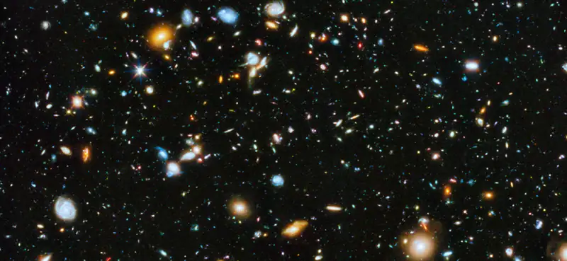
In this chapter, we study the nature of the gravitational force for objects as small as ourselves and for systems as massive as entire galaxies. We show how the gravitational force affects objects on Earth and the motion of the Universe itself. Gravity is the first force to be postulated as an action-at-a-distance force, that is, objects exert a gravitational force on one another without physical contact and that force falls to zero only at an infinite distance. Earth exerts a gravitational force on you, but so do our Sun, the Milky Way galaxy, and the billions of galaxies, like those shown above, which are so distant that we cannot see them with the naked eye.
13.1 Newton's Law of Universal Gravitation¶
Learning Objectives
By the end of this section, you will be able to:
- List the significant milestones in the history of gravitation
- Calculate the gravitational force between two point masses
- Estimate the gravitational force between collections of mass
We first review the history of the study of gravitation, with emphasis on those phenomena that for thousands of years have inspired philosophers and scientists to search for an explanation. Then we examine the simplest form of Newton’s law of universal gravitation and how to apply it.
The History of Gravitation¶
The earliest philosophers wondered why objects naturally tend to fall toward the ground. Aristotle (384–322 BCE) believed that it was the nature of rocks to seek Earth and the nature of fire to seek the Heavens. Brahmagupta (598~665 CE) postulated that Earth was a sphere and that objects possessed a natural affinity for it, falling toward the center from wherever they were located.
The motions of the Sun, our Moon, and the planets have been studied for thousands of years as well. These motions were described with amazing accuracy by Ptolemy (90–168 CE), whose method of epicycles described the paths of the planets as circles within circles. However, there is little evidence that anyone connected the motion of astronomical bodies with the motion of objects falling to Earth—until the seventeenth century.
The idea of heliocentrism, in which the Sun is at the center of the solar system, dates at least as far back as Aristarchus of Samos in the third century BCE, but attracted little attention, and Ptolemy’s geocentric (Earth-centered) model held sway in Europe until the sixteenth century. Nicolaus Copernicus (1473–1543) is generally credited as being the first to produce a mathematical model of a heliocentric system and to challenge Ptolemy’s geocentric system. This idea was supported by the incredibly precise naked-eye measurements of planetary motions by Tycho Brahe and their analysis by Johannes Kepler and Galileo Galilei. Kepler showed that the motion of each planet is an ellipse (the first of his three laws, discussed in Kepler’s Laws of Planetary Motion), and Robert Hooke (the same Hooke who formulated Hooke’s law for springs) intuitively suggested that these motions are due to the planets being attracted to the Sun. However, it was Isaac Newton who connected the acceleration of objects near Earth’s surface with the centripetal acceleration of the Moon in its orbit about Earth.
Other prominent scientists and mathematicians of the time, particularly those outside of England, were reluctant to accept Newton's principles. It took the work of another prominent philosopher, writer, and scientist, Émilie du Châtelet, to establish the Newtonian gravitation as the accurate and overarching law. Du Châtelet, who had earlier laid the foundation for the understanding of conservation of energy as well as the principle that light had no mass, translated and augmented Newton's key work. She also utilized calculus to explain gravity, which helped lead to its acceptance.
Finally, in Einstein’s Theory of Gravity, we look at the theory of general relativity proposed by Albert Einstein in 1916. His theory comes from a vastly different perspective, in which gravity is a manifestation of mass warping space and time. The consequences of his theory gave rise to many remarkable predictions, essentially all of which have been confirmed over the many decades following the publication of the theory (including the 2015 measurement of gravitational waves from the merger of two black holes).
Newton’s Law of Universal Gravitation¶
Newton noted that objects at Earth’s surface (hence at a distance of \(R_{\text{E}}\) from the center of Earth) have an acceleration of g, but the Moon, at a distance of about \(60\:R_{\text{E}}\), has a centripetal acceleration about \({(60)}^{2}\) times smaller than g. He could explain this by postulating that a force exists between any two objects, whose magnitude is given by the product of the two masses divided by the square of the distance between them. We now know that this inverse square law is ubiquitous in nature, a function of geometry for point sources. The strength of any source at a distance r is spread over the surface of a sphere centered about the mass. The surface area of that sphere is proportional to \(r^{2}\). In later chapters, we see this same form in the electromagnetic force.
Newton’s Law of Gravitation
Newton’s law of gravitation can be expressed as
where \({\mathbf{\vec{F}}}_{12}\) is the force on object 1 exerted by object 2 and \({\mathbf{\hat{r}}}_{12}\) is a unit vector that points from object 1 toward object 2.
As shown in Figure 13.2, the \({\mathbf{\vec{F}}}_{12}\) vector points from object 1 toward object 2, and hence represents an attractive force between the objects. The equal but opposite force \({\mathbf{\vec{F}}}_{21}\) is the force on object 2 exerted by object 1.
![The figure shows two circular objects, one smaller, labeled as mass m1 on the lower left, and the larger one labeled m2 on the upper right. The center of each object is labeled C M. A line is drawn joining the center of the objects and is labeled as r. Two red arrows and two black arrows, one each from the center of each object, are drawn toward each other. The black arrow from the center of mass 1 is labeled r hat 1 2 and the red arrow from mass 1 is labeled F 1 2. The black arrow from the center of mass 2 is labeled r hat 2 1 and the red arrow from mass 2 is labeled F 2 1.](img/cnx-uphysics-13-01-newtonlofg.webp)
These equal but opposite forces reflect Newton’s third law, which we discussed earlier. Note that strictly speaking, Equation 13.1 applies to point masses—all the mass is located at one point. But it applies equally to any spherically symmetric objects, where r is the distance between the centers of mass of those objects. In many cases, it works reasonably well for nonsymmetrical objects, if their separation is large compared to their size, and we take r to be the distance between the center of mass of each body.
The Cavendish Experiment¶
A century after Newton published his law of universal gravitation, Henry Cavendish determined the proportionality constant G by performing a painstaking experiment. He constructed a device similar to that shown in Figure 13.3, in which small masses are suspended from a wire. Once in equilibrium, two fixed, larger masses are placed symmetrically near the smaller ones. The gravitational attraction creates a torsion (twisting) in the supporting wire that can be measured.
The constant G is called the universal gravitational constant and Cavendish determined it to be \(G=6.67\:\times\:{10}^{-11}\:\text{N}\cdot\text{m}^{2}\text{/kg}^{2}\). The word ‘universal’ indicates that scientists think that this constant applies to masses of any composition and that it is the same throughout the Universe. The value of G is an incredibly small number, showing that the force of gravity is very weak. The attraction between masses as small as our bodies, or even objects the size of skyscrapers, is incredibly small. For example, two 1.0-kg masses located 1.0 meter apart exert a force of \(6.7\:\times\:{10}^{-11}\:\text{N}\) on each other. This is the weight of a typical grain of pollen.
![The figure illustrates the Cavendish experiment. A horizontal bar, centered on a stand, supports two spheres of mass M, one at either of its ends. The point where the bar sits on the stand is labeled "pivot". Just over this bar is a stick holding two spherical objects of mass m, one mass at either of its ends. This bar is suspended from a mirror at the center of the device facing to the right. The mirror is suspended from a fiber. The rotation of the fiber over the axis of the stand is counter-clockwise. A light source on the right side of the device emits a ray of light toward the mirror which is then reflected toward a scale bar which is on the right to the device below the light source.](img/cnx-uphysics-13-01-cavendish.webp)
Although gravity is the weakest of the four fundamental forces of nature, its attractive nature is what holds us to Earth, causes the planets to orbit the Sun and the Sun to orbit our galaxy, and binds galaxies into clusters, ranging from a few to millions. Gravity is the force that forms the Universe.
Problem-Solving Strategy: Newton’s Law of Gravitation
To determine the motion caused by the gravitational force, follow these steps:
- Identify the two masses, one or both, for which you wish to find the gravitational force.
- Draw a free-body diagram, sketching the force acting on each mass and indicating the distance between their centers of mass.
- Apply Newton’s second law of motion to each mass to determine how it will move.
Example 13.1 A Collision in Orbit
Consider two nearly spherical Soyuz payload vehicles, in orbit about Earth, each with mass 9000 kg and diameter 4.0 m. They are initially at rest relative to each other, 10.0 m from center to center. (Both orbit Earth at the same speed and interact nearly the same as if they were isolated in deep space.) Determine the gravitational force between them and their initial acceleration toward each other (parallel to their orbital motion). Estimate how long it takes for them to drift together, and how fast they are moving upon impact.
Strategy
We use Newton’s law of gravitation to determine the force between them and then use Newton’s second law to find the acceleration of each. For the estimate, we find the final acceleration as well and assume the acceleration is constant at its average value, and we use the constant-acceleration equations from Motion along a Straight Line to find the time and speed of the collision.
Solution
The magnitude of the force is
The initial acceleration of each payload is
The vehicles are 4.0 m in diameter, so the vehicles move from 10.0 m to 4.0 m apart, or a distance of 3.0 m each. A similar calculation to that above, for when the vehicles are 4.0 m apart, yields an acceleration of \(3.8\:\times\:{10}^{-8}\:\text{m/s}^{2}\), and the average of these two values is \(2.2\:\times\:{10}^{-8}\:\text{m/s}^{2}\). If we assume a constant acceleration of this value and they start from rest, then the vehicles collide with speed given by
so
We use \(v^{}=v_{0}+at\) to find \(t=v\text{/}a=1.7\:\times\:{10}^{4}\:\text{s}\) or about 4.6 hours.
Significance
These calculations—including the initial force—are only estimates, as the vehicles are probably not spherically symmetrical. But you can see that the force is incredibly small. Astronauts must tether themselves when doing work outside even the massive International Space Station (ISS), as in Figure 13.4, because the gravitational attraction cannot save them from even the smallest push away from the station.
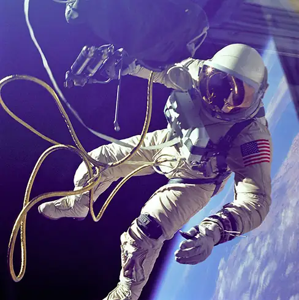
Check Your Understanding
What happens to force and acceleration as the vehicles fall together? What will our estimate of the velocity at a collision higher or lower than the speed actually be? And finally, what would happen if the masses were not identical? Would the force on each be the same or different? How about their accelerations?
Answer
The force of gravity on each object increases with the square of the inverse distance as they fall together, and hence so does the acceleration. For example, if the distance is halved, the force and acceleration are quadrupled. Our average is accurate only for a linearly increasing acceleration, whereas the acceleration actually increases at a greater rate. So our calculated speed is too small. From Newton’s third law (action-reaction forces), the force of gravity between any two objects must be the same. But the accelerations will not be if they have different masses.
The effect of gravity between two objects with masses on the order of these space vehicles is indeed small. Yet, the effect of gravity on you from Earth is significant enough that a fall into Earth of only a few feet can be dangerous. We examine the force of gravity near Earth’s surface in the next section.
Example 13.2 Attraction between Galaxies
Find the acceleration of our galaxy, the Milky Way, due to the nearest comparably sized galaxy, the Andromeda galaxy (Figure 13.5). The approximate mass of each galaxy is 800 × 109 solar masses (a solar mass is the mass of our Sun), and they are separated by 2.5 million light-years. (Note that the mass of Andromeda is not so well known but is believed to be slightly larger than our galaxy.) Each galaxy has a diameter of roughly 100,000 light-years \((1\:\text{light-year}=9.5\:\times\:{10}^{15}\:\:\text{m})\).
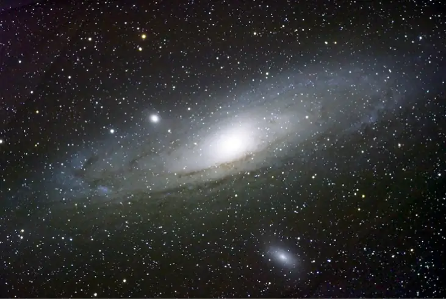
Strategy
As in the preceding example, we use Newton’s law of gravitation to determine the force between them and then use Newton’s second law to find the acceleration of the Milky Way. We can consider the galaxies to be point masses, since their sizes are about 25 times smaller than their separation. The mass of the Sun (see Appendix D) is \(2.0\:\times\:{10}^{30}\:\text{kg}\) and a light-year is the distance light travels in one year, \(9.5\:\times\:{10}^{15}\:\text{m}\).
Solution
The magnitude of the force is
The acceleration of the Milky Way is
Significance
Does this value of acceleration seem astoundingly small? If they start from rest, then they would accelerate directly toward each other, “colliding” at their center of mass. Let’s estimate the time for this to happen. The initial acceleration is \(\sim{10}^{-13}\:\text{m/s}^{2}\), so using \(v=at\), we see that it would take \(\sim{10}^{13}\:\text{s}\) for each galaxy to reach a speed of 1.0 m/s, and they would be only \(\sim 0.5\:\times\:{10}^{13}\:\text{m}\) closer. That is nine orders of magnitude smaller than the initial distance between them. In reality, such motions are rarely simple. These two galaxies, along with about 50 other smaller galaxies, are all gravitationally bound into our local cluster. Our local cluster is gravitationally bound to other clusters in what is called a supercluster. All of this is part of the great cosmic dance that results from gravitation, as shown in Figure 13.6.
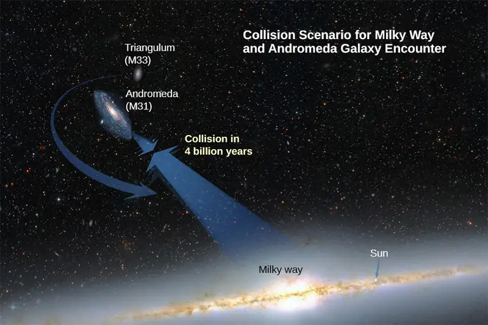
13.2 Gravitation Near Earth's Surface¶
Learning Objectives
By the end of this section, you will be able to:
- Explain the connection between the constants \(G\) and \(g\)
- Determine the mass of an astronomical body from free-fall acceleration at its surface
- Describe how the value of \(g\) varies due to location and Earth’s rotation
In this section, we observe how Newton’s law of gravitation applies at the surface of a planet and how it connects with what we learned earlier about free fall. We also examine the gravitational effects within spherical bodies.
Weight¶
Recall that the acceleration of a free-falling object near Earth’s surface is approximately \(g=9.80\:\text{m/s}^{2}\). The force causing this acceleration is called the weight of the object, and from Newton’s second law, it has the value mg. This weight is present regardless of whether the object is in free fall. We now know that this force is the gravitational force between the object and Earth. If we substitute mg for the magnitude of \({\overrightarrow{\mathbf{F}}}_{12}\) in Newton’s law of universal gravitation, m for \(m_{1}\), and \(M_{\text{E}}\) for \(m_{2}\), we obtain the scalar equation
where r is the distance between the centers of mass of the object and Earth. The mass m of the object cancels, leaving
equation callout
The average radius of Earth is about 6370 km. Hence, for objects within a few kilometers of Earth’s surface, we can take \(r=R_{\text{E}}\) (Figure 13.7). This explains why all masses free fall with the same acceleration. We have ignored the fact that Earth also accelerates toward the falling object, but that is acceptable as long as the mass of Earth is much larger than that of the object.
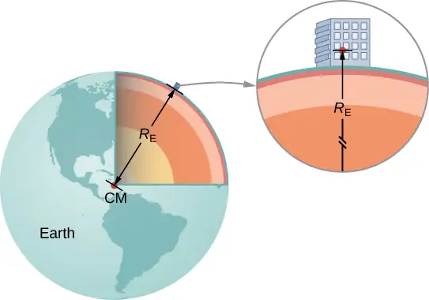
Example 13.3 Masses of Earth and Moon
Have you ever wondered how we know the mass of Earth? We certainly can’t place it on a scale. The values of g and the radius of Earth were measured with reasonable accuracy centuries ago.
- Use the standard values of g, \(R_{\text{E}}\), and Equation 13.2 to find the mass of Earth.
- Estimate the value of g on the Moon. Use the fact that the Moon has a radius of about 1700 km (a value of this accuracy was determined many centuries ago) and assume it has the same average density as Earth, \(5500\:\text{kg/m}^{3}\).
Strategy
With the known values of g and \(R_{\text{E}}\), we can use Equation 13.2 to find \(M_{\text{E}}\). For the Moon, we use the assumption of equal average density to determine the mass from a ratio of the volumes of Earth and the Moon.
Solution
a. Rearranging Equation 13.2, we have
b. The volume of a sphere is proportional to the radius cubed, so a simple ratio gives us
We now use Equation 13.2.
Significance
As soon as Cavendish determined the value of G in 1798, the mass of Earth could be calculated. (In fact, that was the ultimate purpose of Cavendish’s experiment in the first place.) The value we calculated for g of the Moon is incorrect. The average density of the Moon is actually only \(3340\:\text{kg/m}^{3}\) and \(g=1.6\:\text{m/s}^{2}\) at the surface. Newton attempted to measure the mass of the Moon by comparing the effect of the Sun on Earth’s ocean tides compared to that of the Moon. His value was a factor of two too small. The most accurate values for g and the mass of the Moon come from tracking the motion of spacecraft that have orbited the Moon. But the mass of the Moon can actually be determined accurately without going to the Moon. Earth and the Moon orbit about a common center of mass, and careful astronomical measurements can determine that location. The ratio of the Moon’s mass to Earth’s is the ratio of [the distance from the common center of mass to the Moon’s center] to [the distance from the common center of mass to Earth’s center].
Later in this chapter, we will see that the mass of other astronomical bodies also can be determined by the period of small satellites orbiting them. But until Cavendish determined the value of G, the masses of all these bodies were unknown.
Example 13.4 Gravity above Earth’s Surface
What is the value of g 400 km above Earth’s surface, where the International Space Station is in orbit?
Strategy
Using the value of \(M_{\text{E}}\) and noting the radius is \(r=R_{\text{E}}+400\:\text{km}\), we use Equation 13.2 to find g.
From Equation 13.2 we have
Significance
We often see video of astronauts in space stations, apparently weightless. But clearly, the force of gravity is acting on them. Comparing the value of g we just calculated to that on Earth \((9.80\:\text{m/s}^{2})\), we see that the astronauts in the International Space Station still have 88% of their weight. They only appear to be weightless because they are in free fall. We will come back to this in Satellite Orbits and Energy.
Check Your Understanding
How does your weight at the top of a tall building compare with that on the first floor? Do you think engineers need to take into account the change in the value of g when designing structural support for a very tall building?
Answer
The tallest buildings in the world are all less than 1 km. Since g is proportional to the distance squared from Earth’s center, a simple ratio shows that the change in g at 1 km above Earth’s surface is less than 0.0001%. There would be no need to consider this in structural design.
The Gravitational Field¶
Equation 13.2 is a scalar equation, giving the magnitude of the gravitational acceleration as a function of the distance from the center of the mass that causes the acceleration. But we could have retained the vector form for the force of gravity in Equation 13.1, and written the acceleration in vector form as
We identify the vector field represented by \(\mathbf{\vec{g}}\) as the gravitational field caused by mass \(M\). We can picture the field as shown Figure 13.8. The lines are directed radially inward and are symmetrically distributed about the mass.
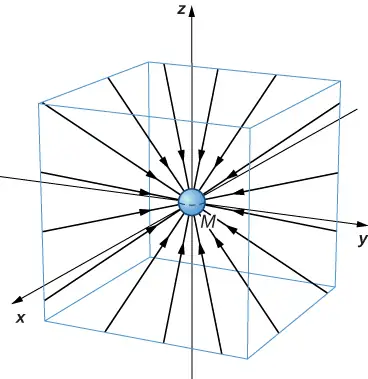
The direction of \(\overrightarrow{\mathbf{g}}\) is parallel to the field lines at any point. The strength of \(\overrightarrow{\mathbf{g}}\) at any point is inversely proportional to the line spacing. Another way to state this is that the magnitude of the field in any region is proportional to the number of lines that pass through a unit surface area, effectively a density of lines. Since the lines are equally spaced in all directions, the number of lines per unit surface area at a distance r from the mass is the total number of lines divided by the surface area of a sphere of radius r, which is proportional to \(r^{2}\). Hence, this picture perfectly represents the inverse square law, in addition to indicating the direction of the field. In the field picture, we say that a mass m interacts with the gravitational field of mass M. We will use the concept of fields to great advantage in the later chapters on electromagnetism.
Apparent Weight: Accounting for Earth’s Rotation¶
As we saw in Applications of Newton’s Laws, objects moving at constant speed in a circle have a centripetal acceleration directed toward the center of the circle, which means that there must be a net force directed toward the center of that circle. Since all objects on the surface of Earth move through a circle every 24 hours, there must be a net centripetal force on each object directed toward the center of that circle.
Let’s first consider an object of mass m located at the equator, suspended from a scale (Figure 13.9). The scale exerts an upward force \({\mathbf{\vec{F}}}_{\text{SE}}\) away from Earth’s center. This is the reading on the scale, and hence it is the apparent weight of the object. The weight (mg) points toward Earth’s center. If Earth were not rotating, the acceleration would be zero and, consequently, the net force would be zero, resulting in \(F_{\text{s}}=mg\). This would be the true reading of the weight.
![An illustration of the earth, rotating on its north-south axis, with masses on spring scales shown at three locations. The radius of the earth is labeled as R E, its center is labeled as O. One spring scale is above the north pole. An upward force F S N and a downward force m g are shown acting on the mass on this spring scale. A dashed line is shown from the center of the earth to the north pole. Another spring scale is shown to the right of the equator and a dashed line connects the center of the earth to the equator on the right side of the earth. The forces on the mass on this second spring scale are shown as a force F S E to the right and m g to the left. A third spring scale is shown at an angle lambda to the horizontal. A dashed line at this angle is shown from the center to the surface of the earth. The horizontal distance from the surface of the earth at this angle lambda to the vertical dashed line connecting the center to the north pole is labeled as r. The point on the dashed vertical line where r meets it is labeled P. Three forces are shown for the third mass. One force is labeled F S and points radially outward. A second force, labeled m g points radially inward. A third force, labeled F c, points horizontally to the left.](img/cnx-uphysics-13-02-apparentw.webp)
With rotation, the sum of these forces must provide the centripetal acceleration, \(a_{\text{c}}\). Using Newton’s second law, we have
equation callout
Note that \(a_{\text{c}}\) points in the same direction as the weight; hence, it is negative. The tangential speed v is the speed at the equator and r is \(R_{\text{E}}\). We can calculate the speed simply by noting that objects on the equator travel the circumference of Earth in 24 hours. Instead, let’s use the alternative expression for \(a_{\text{c}}\) from Motion in Two and Three Dimensions. Recall that the tangential speed is related to the angular speed \((\omega)\) by \(v=r\omega\). Hence, we have \(a_{c}=-r\omega^{2}\). By rearranging Equation 13.3 and substituting \(r=R_{\text{E}}\), the apparent weight at the equator is
The angular speed of Earth everywhere is
Substituting for the values or \(R_{\text{E}}\) and \(\omega\), we have \(R_{\text{E}}\omega^{2}=0.0337\:\text{m/s}^{2}\). This is only 0.34% of the value of gravity, so it is clearly a small correction.
Example 13.5 Zero Apparent Weight
How fast would Earth need to spin for those at the equator to have zero apparent weight? How long would the length of the day be?
Strategy
Using Equation 13.3, we can set the apparent weight (\(F_{\text{SE}}\)) to zero and determine the centripetal acceleration required. From that, we can find the speed at the equator. The length of day is the time required for one complete rotation.
Solution
From Equation 13.2, we have \(\displaystyle \sum F=F_{\text{SE}}-mg=ma_{\text{c}}\), so setting \(F_{\text{SE}}=0\), we get \(g=a_{\text{c}}\). Using the expression for \(a_{\text{c}}\), substituting for Earth’s radius and the standard value of gravity, we get
The period T is the time for one complete rotation. Therefore, the tangential speed is the circumference divided by T, so we have
This is about 84 minutes.
Significance
We will see later in this chapter that this speed and length of day would also be the orbital speed and period of a satellite in orbit at Earth’s surface. While such an orbit would not be possible near Earth’s surface due to air resistance, it certainly is possible only a few hundred miles above Earth.
Results Away from the Equator¶
At the pole, \(a_{\text{c}}\rightarrow 0\) and \(F_{\text{SN}}=F_{\text{SS}}=mg\), just as is the case without rotation. At any other latitude \(\lambda\), the situation is more complicated. The centripetal acceleration is directed toward point P in the figure, and the radius becomes \(r=R_{\text{E}}\cos\lambda\). The vector sum of the weight and \({\overrightarrow{\mathbf{F}}}_{\text{s}}\) must point toward point P, hence \({\overrightarrow{\mathbf{F}}}_{\text{s}}\) no longer points away from the center of Earth. (The difference is small and exaggerated in the figure.) A plumb bob will always point along this deviated direction. All buildings are built aligned along this deviated direction, not along a radius through the center of Earth. For the tallest buildings, this represents a deviation of a few feet at the top.
It is also worth noting that Earth is not a perfect sphere. The interior is partially liquid, and this enhances Earth bulging at the equator due to its rotation. The radius of Earth is about 30 km greater at the equator compared to the poles. It is left as an exercise to compare the strength of gravity at the poles to that at the equator using Equation 13.2. The difference is comparable to the difference due to rotation and is in the same direction. Apparently, you really can lose “weight” by moving to the tropics.
Gravity Away from the Surface¶
Earlier we stated without proof that the law of gravitation applies to spherically symmetrical objects, where the mass of each body acts as if it were at the center of the body. Since Equation 13.2 is derived from Equation 13.1, it is also valid for symmetrical mass distributions, but both equations are valid only for values of \(r\ge R_{\text{E}}\). As we saw in Example 13.4, at 400 km above Earth’s surface, where the International Space Station orbits, the value of g is \(8.67\:\text{m/s}^{2}\). (We will see later that this is also the centripetal acceleration of the ISS.)
For \(r \lt R_{\text{E}}\), Equation 13.1 and Equation 13.2 are not valid. However, we can determine g for these cases using a principle that comes from Gauss’s law, which is a powerful mathematical tool that we study in more detail later in the course. A consequence of Gauss’s law, applied to gravitation, is that only the mass within r contributes to the gravitational force. Also, that mass, just as before, can be considered to be located at the center. The gravitational effect of the mass outside r has zero net effect.
Two very interesting special cases occur. For a spherical planet with constant density, the mass within r is the density times the volume within r. This mass can be considered located at the center. Replacing \(M_{\text{E}}\) with only the mass within r, \(M=\rho\:\times\:(\text{volume of a sphere})\), and \(R_{\text{E}}\) with r, Equation 13.2 becomes
The value of g, and hence your weight, decreases linearly as you descend down a hole to the center of the spherical planet. At the center, you are weightless, as the mass of the planet pulls equally in all directions. Actually, Earth’s density is not constant, nor is Earth solid throughout. Figure 13.10 shows the profile of g if Earth had constant density and the more likely profile based upon estimates of density derived from seismic data.
![A section of the earth is illustrated, showing several layers inside the earth. A legend indicates that the layers are, from the surface working inward, the Upper mantle in pink, lower mantle in red, outer core in orange, and inner core in tan. The upper mantle is much thinner than the lower mantle and outer core, which are approximately the same thickness, and the inner core radius is a greater than the upper mantle thickness but less than that of the outer core. Below this illustration is a graph of acceleration in m per second squared as a function of radius in 1000 k m. The vertical scale is from 0 to 12 meters per second squared and the horizontal scale is from 0 to 14 thousand kilometers. Vertical bars using the same color scheme as the illustration of the earth are shown aligned with the illustration. The inner core extends from 0 to a little over 1000 k m. The outer core extends to just under 4000 k m. The lower mantle to just under 6000 k m. The upper mantle extends to just over 6000 k m. A blue curve, labeled P R E M, starts at the origin and rises almost linearly to over 10 m per second squared at the outer edge of the outer core. The curve then decreases to under 10 at the outer edge of the upper mantle. The curve then decreases more rapidly, but with slope that is decreasing with radius. A second green curve is labeled “Constant decay” and is a straight line from the origin of the graph to the point at a radius of just over 6000 k m (the surface) and just under 10 (the value of the blue curve at the surface).](img/cnx-uphysics-13-02-valueofg.webp)
The second interesting case concerns living on a spherical shell planet. This scenario has been proposed in many science fiction stories. Ignoring significant engineering issues, the shell could be constructed with a desired radius and total mass, such that g at the surface is the same as Earth’s. Can you guess what happens once you descend in an elevator to the inside of the shell, where there is no mass between you and the center? What benefits would this provide for traveling great distances from one point on the sphere to another? And finally, what effect would there be if the planet was spinning?
13.3 Gravitational Potential Energy and Total Energy¶
Learning Objectives
By the end of this section, you will be able to:
- Determine changes in gravitational potential energy over great distances
- Apply conservation of energy to determine escape velocity
- Determine whether astronomical bodies are gravitationally bound
We studied gravitational potential energy in Potential Energy and Conservation of Energy, where the value of g remained constant. We now develop an expression that works over distances such that g is not constant. This is necessary to correctly calculate the energy needed to place satellites in orbit or to send them on missions in space.
Gravitational Potential Energy beyond Earth¶
We defined work and potential energy in Work and Kinetic Energy and Potential Energy and Conservation of Energy. The usefulness of those definitions is the ease with which we can solve many problems using conservation of energy. Potential energy is particularly useful for forces that change with position, as the gravitational force does over large distances. In Potential Energy and Conservation of Energy, we showed that the change in gravitational potential energy near Earth’s surface is \(\Delta U=mg(y_{2}-y_{1})\). This works very well if g does not change significantly between \(y_{1}\) and \(y_{2}\). We return to the definition of work and potential energy to derive an expression that is correct over larger distances.
Recall that work (W) is the integral of the dot product between force and distance. Essentially, it is the product of the component of a force along a displacement times that displacement. We define \(\Delta U\) as the negative of the work done by the force we associate with the potential energy. For clarity, we derive an expression for moving a mass m from distance \(r_{1}\) from the center of Earth to distance \(r_{2}\). However, the result can easily be generalized to any two objects changing their separation from one value to another.
Consider Figure 13.11, in which we take m from a distance \(r_{1}\) from Earth’s center to a distance that is \(r_{2}\) from the center. Gravity is a conservative force (its magnitude and direction are functions of location only), so we can take any path we wish, and the result for the calculation of work is the same. We take the path shown, as it greatly simplifies the integration. We first move radially outward from distance \(r_{1}\) to distance \(r_{2}\), and then move along the arc of a circle until we reach the final position. During the radial portion, \(\overrightarrow{\mathbf{F}}\) is opposite to the direction we travel along \(d\mathbf{\vec{r}}\), so \(E=K_{1}+U_{1}=K_{2}+U_{2}.\) Along the arc, \(\overrightarrow{\mathbf{F}}\) is perpendicular to \(d\mathbf{\vec{r}}\), so \(\overrightarrow{\mathbf{F}}\cdot d\overrightarrow{\mathbf{r}}=0\). No work is done as we move along the arc. Using the expression for the gravitational force and noting the values for \(\overrightarrow{\mathbf{F}}\cdot d\overrightarrow{\mathbf{r}}\) along the two segments of our path, we have
Since \(\Delta U=U_{2}-U_{1}\), we can adopt a simple expression for \(U\):
equation callout
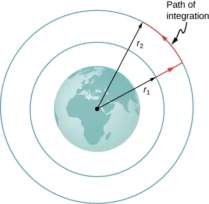
Note two important items with this definition. First, \(U\rightarrow 0\:\text{as}\:r\rightarrow\infty\). The potential energy is zero when the two masses are infinitely far apart. Only the difference in U is important, so the choice of \(U=0\:\text{for}\:r=\infty\) is merely one of convenience. (Recall that in earlier gravity problems, you were free to take \(U=0\) at the top or bottom of a building, or anywhere.) Second, note that U becomes increasingly more negative as the masses get closer. That is consistent with what you learned about potential energy in Potential Energy and Conservation of Energy. As the two masses are separated, positive work must be done against the force of gravity, and hence, U increases (becomes less negative). All masses naturally fall together under the influence of gravity, falling from a higher to a lower potential energy.
Example 13.6 Lifting a Payload
How much energy is required to lift the 9000-kg Soyuz vehicle from Earth’s surface to the height of the ISS, 400 km above the surface?
Strategy
Use Equation 13.2 to find the change in potential energy of the payload. That amount of work or energy must be supplied to lift the payload.
Solution
Paying attention to the fact that we start at Earth’s surface and end at 400 km above the surface, the change in U is
We insert the values
and convert 400 km into \(4.00\:\times\:{10}^{5}\:\text{m}\). We find \(\Delta U=3.32\:\times\:{10}^{10}\:\text{J}\). It is positive, indicating an increase in potential energy, as we would expect.
Significance
For perspective, consider that the average US household energy use in 2013 was 909 kWh per month. That is energy of
So our result is an energy expenditure equivalent to 10 months. But this is just the energy needed to raise the payload 400 km. If we want the Soyuz to be in orbit so it can rendezvous with the ISS and not just fall back to Earth, it needs a lot of kinetic energy. As we see in the next section, that kinetic energy is about five times that of \(\Delta U\). In addition, far more energy is expended lifting the propulsion system itself. Space travel is not cheap.
Check Your Understanding
Why not use the simpler expression \(\Delta U=mg(y_{2}-y_{1})\)? How significant would the error be? (Recall the previous result, in Example 13.4, that the value g at 400 km above the Earth is \(8.67\:\text{m/s}^{2}\).)
Answer
The value of g drops by about 10% over this change in height. So \(\Delta U=mg(y_{2}-y_{1})\) will give too large a value. If we use \(g=9.80\:\text{m/s}\), then we get
\(\Delta U=mg(y_{2}-y_{1})=3.53\:\times\:{10}^{10}\:\text{J}\)
which is about 6% greater than that found with the correct method.
Conservation of Energy¶
In Potential Energy and Conservation of Energy, we described how to apply conservation of energy for systems with conservative forces. We were able to solve many problems, particularly those involving gravity, more simply using conservation of energy. Those principles and problem-solving strategies apply equally well here. The only change is to place the new expression for potential energy into the conservation of energy equation, \(E=K_{1}+U_{1}=K_{2}+U_{2}\).
equation callout
Note that we use M, rather than \(M_{\text{E}}\), as a reminder that we are not restricted to problems involving Earth. However, we still assume that \(m\text{ \lt }\:\text{ \lt }M\). (For problems in which this is not true, we need to include the kinetic energy of both masses and use conservation of momentum to relate the velocities to each other. But the principle remains the same.)
Escape velocity¶
Escape velocity is often defined to be the minimum initial velocity of an object that is required to escape the surface of a planet (or any large body like a moon) and never return. As usual, we assume no energy lost to an atmosphere, should there be any.
Consider the case where an object is launched from the surface of a planet with an initial velocity directed away from the planet. With the minimum velocity needed to escape, the object would just come to rest infinitely far away, that is, the object gives up the last of its kinetic energy just as it reaches infinity, where the force of gravity becomes zero. Since \(U\rightarrow 0\:\text{as}\:r\rightarrow\infty\), this means the total energy is zero. Thus, we find the escape velocity from the surface of an astronomical body of mass M and radius R by setting the total energy equal to zero. At the surface of the body, the object is located at \(r_{1}=R\) and it has escape velocity \(v_{1}=v_{\text{esc}}\). It reaches \(r_{2}=\infty\) with velocity \(v_{2}=0\). Substituting into Equation 13.5, we have
Solving for the escape velocity,
equation callout
Notice that m has canceled out of the equation. The escape velocity is the same for all objects, regardless of mass. Also, we are not restricted to the surface of the planet; R can be any starting point beyond the surface of the planet.
Example 13.7 Escape from Earth
What is the escape speed from the surface of Earth? Assume there is no energy loss from air resistance. Compare this to the escape speed from the Sun, starting from Earth’s orbit.
Strategy
We use Equation 13.6, clearly defining the values of R and M. To escape Earth, we need the mass and radius of Earth. For escaping the Sun, we need the mass of the Sun, and the orbital distance between Earth and the Sun.
Solution
Substituting the values for Earth’s mass and radius directly into Equation 13.6, we obtain
That is about 11 km/s or 25,000 mph. To escape the Sun, starting from Earth’s orbit, we use \(R=R_{\text{ES}}=1.50\:\times\:{10}^{11}\:\text{m}\) and \(M_{\text{Sun}}=1.99\:\times\:{10}^{30}\:\text{kg}\). The result is \(v_{\text{esc}}=4.21\:\times\:{10}^{4}\:\text{m/s}\) or about 42 km/s.
Significance
The speed needed to escape the Sun (leave the solar system) is nearly four times the escape speed from Earth’s surface. But there is help in both cases. Earth is rotating, at a speed of nearly 460 m/s at the equator, and we can use that velocity to help escape, or to achieve orbit. For this reason, many commercial space companies maintain launch facilities near the equator. To escape the Sun, there is even more help. Earth revolves about the Sun at a speed of approximately 30 km/s. By launching in the direction that Earth is moving, we need only an additional 12 km/s. The use of gravitational assist from other planets, essentially a gravity slingshot technique, allows space probes to reach even greater speeds. In this slingshot technique, the vehicle approaches the planet and is accelerated by the planet’s gravitational attraction. It has its greatest speed at the closest point of approach, although it accelerates opposite to the motion in equal measure as it moves away. But relative to the planet, the vehicle’s speed far before the approach, and long after, are the same. If the directions are chosen correctly, that can result in a significant increase (or decrease if needed) in the vehicle’s speed relative to the rest of the solar system.
Media
Visit this website to learn more about escape velocity.
Check Your Understanding
If we send a probe out of the solar system starting from Earth’s surface, do we only have to escape the Sun?
Answer
The probe must overcome both the gravitational pull of Earth and the Sun. In the second calculation of our example, we found the speed necessary to escape the Sun from a distance of Earth’s orbit, not from Earth itself. The proper way to find this value is to start with the energy equation, Equation 13.5, in which you would include a potential energy term for both Earth and the Sun.
Energy and gravitationally bound objects¶
As stated previously, escape velocity can be defined as the initial velocity of an object that can escape the surface of a moon or planet. More generally, it is the speed at any position such that the total energy is zero. If the total energy is zero or greater, the object escapes. If the total energy is negative, the object cannot escape. Let’s see why that is the case.
As noted earlier, we see that \(U\rightarrow 0\:\text{as}\:r\rightarrow\infty\). If the total energy is zero, then as m reaches a value of r that approaches infinity, U becomes zero and so must the kinetic energy. Hence, m comes to rest infinitely far away from M. It has “just escaped” M. If the total energy is positive, then kinetic energy remains at \(r=\infty\) and certainly m does not return. When the total energy is zero or greater, then we say that m is not gravitationally bound to M.
On the other hand, if the total energy is negative, then the kinetic energy must reach zero at some finite value of r, where U is negative and equal to the total energy. The object can never exceed this finite distance from M, since to do so would require the kinetic energy to become negative, which is not possible. We say m is gravitationally bound to M.
We have simplified this discussion by assuming that the object was headed directly away from the planet. What is remarkable is that the result applies for any velocity. Energy is a scalar quantity and hence Equation 13.5 is a scalar equation—the direction of the velocity plays no role in conservation of energy. It is possible to have a gravitationally bound system where the masses do not “fall together,” but maintain an orbital motion about each other.
We have one important final observation. Earlier we stated that if the total energy is zero or greater, the object escapes. Strictly speaking, Equation 13.5 and Equation 13.6 apply for point objects. They apply to finite-sized, spherically symmetric objects as well, provided that the value for r in Equation 13.5 is always greater than the sum of the radii of the two objects. If r becomes less than this sum, then the objects collide. (Even for greater values of r, but near the sum of the radii, gravitational tidal forces could create significant effects if both objects are planet sized. We examine tidal effects in Tidal Forces.) Neither positive nor negative total energy precludes finite-sized masses from colliding. For real objects, direction is important.
Example 13.8 How Far Can an Object Escape?
Let’s consider the preceding example again, where we calculated the escape speed from Earth and the Sun, starting from Earth’s orbit. We noted that Earth already has an orbital speed of 30 km/s. As we see in the next section, that is the tangential speed needed to stay in circular orbit. If an object had this speed at the distance of Earth’s orbit, but was headed directly away from the Sun, how far would it travel before coming to rest? Ignore the gravitational effects of any other bodies.
Strategy
The object has initial kinetic and potential energies that we can calculate. When its speed reaches zero, it is at its maximum distance from the Sun. We use Equation 13.5, conservation of energy, to find the distance at which kinetic energy is zero.
Solution
The initial position of the object is Earth’s radius of orbit and the intial speed is given as 30 km/s. The final velocity is zero, so we can solve for the distance at that point from the conservation of energy equation. Using \(R_{\text{ES}}=1.50\:\times\:{10}^{11}\:\text{m}\) and \(M_{\text{Sun}}=1.99\:\times\:{10}^{30}\:\text{kg}\), we have
where the mass m cancels. Solving for \(r_{2}\) we get \(r_{2}=3.0\:\times\:{10}^{11}\:\text{m}\). Note that this is twice the initial distance from the Sun and takes us past Mars’s orbit, but not quite to the asteroid belt.
Significance
The object in this case reached a distance exactly twice the initial orbital distance. We will see the reason for this in the next section when we calculate the speed for circular orbits.
Check Your Understanding
Assume you are in a spacecraft in orbit about the Sun at Earth’s orbit, but far away from Earth (so that it can be ignored). How could you redirect your tangential velocity to the radial direction such that you could then pass by Mars’s orbit? What would be required to change just the direction of the velocity?
Answer
You change the direction of your velocity with a force that is perpendicular to the velocity at all points. In effect, you must constantly adjust the thrusters, creating a centripetal force until your momentum changes from tangential to radial. A simple momentum vector diagram shows that the net change in momentum is \(\sqrt{2}\) times the magnitude of momentum itself. This turns out to be a very inefficient way to reach Mars. We discuss the most efficient way in Kepler’s Laws of Planetary Motion.
13.4 Satellite Orbits and Energy¶
Learning Objectives
By the end of this section, you will be able to:
- Describe the mechanism for circular orbits
- Find the orbital periods and speeds of satellites
- Determine whether objects are gravitationally bound
The Moon orbits Earth. In turn, Earth and the other planets orbit the Sun. The space directly above our atmosphere is filled with artificial satellites in orbit. We examine the simplest of these orbits, the circular orbit, to understand the relationship between the speed and period of planets and satellites in relation to their positions and the bodies that they orbit.
Circular Orbits¶
As noted at the beginning of this chapter, Nicolaus Copernicus first suggested that Earth and all other planets orbit the Sun in circles. He further noted that orbital periods increased with distance from the Sun. Later analysis by Kepler showed that these orbits are actually ellipses, but the orbits of most planets in the solar system are nearly circular. Earth’s orbital distance from the Sun varies a mere 2%. The exception is the eccentric orbit of Mercury, whose orbital distance varies nearly 40%.
Determining the orbital speed and orbital period of a satellite is much easier for circular orbits, so we make that assumption in the derivation that follows. As we described in the previous section, an object with negative total energy is gravitationally bound and therefore is in orbit. Our computation for the special case of circular orbits will confirm this. We focus on objects orbiting Earth, but our results can be generalized for other cases.
Consider a satellite of mass m in a circular orbit about Earth at distance r from the center of Earth (Figure 13.12). It has centripetal acceleration directed toward the center of Earth. Earth’s gravity is the only force acting, so Newton’s second law gives
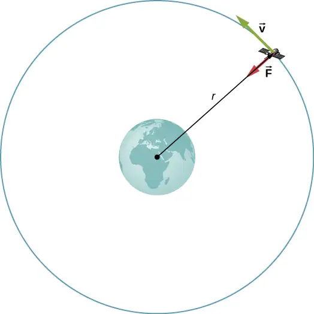
We solve for the speed of the orbit, noting that m cancels, to get the orbital speed
equation callout
Consistent with what we saw in Equation 13.2 and Equation 13.6, m does not appear in Equation 13.7. The value of g, the escape velocity, and orbital velocity depend only upon the distance from the center of the planet, and not upon the mass of the object being acted upon. Notice the similarity in the equations for \(v_{\text{orbit}}\) and \(v_{\text{esc}}\). The escape velocity is exactly \(\sqrt{2}\) times greater, about 40%, than the orbital velocity. This comparison was noted in Example 13.7, and it is true for a satellite at any radius.
To find the period of a circular orbit, we note that the satellite travels the circumference of the orbit \(2\pi r\) in one period T. Using the definition of speed, we have \(v_{\text{orbit}}=2\pi r\text{/}T\). We substitute this into Equation 13.7 and rearrange to get
equation callout
We see in the next section that this represents Kepler’s third law for the case of circular orbits. It also confirms Copernicus’s observation that the period of a planet increases with increasing distance from the Sun. We need only replace \(M_{\text{E}}\) with \(M_{\text{Sun}}\) in Equation 13.8.
We conclude this section by returning to our earlier discussion about astronauts in orbit appearing to be weightless, as if they were free-falling towards Earth. In fact, they are in free fall. Consider the trajectories shown in Figure 13.13. (This figure is based on a drawing by Newton in his Principia and also appeared earlier in Motion in Two and Three Dimensions.) All the trajectories shown that hit the surface of Earth have less than orbital velocity. The astronauts would accelerate toward Earth along the noncircular paths shown and feel weightless. (Astronauts actually train for life in orbit by riding in airplanes that free fall for 30 seconds at a time.) But with the correct orbital velocity, Earth’s surface curves away from them at exactly the same rate as they fall toward Earth. Of course, staying the same distance from the surface is the point of a circular orbit.
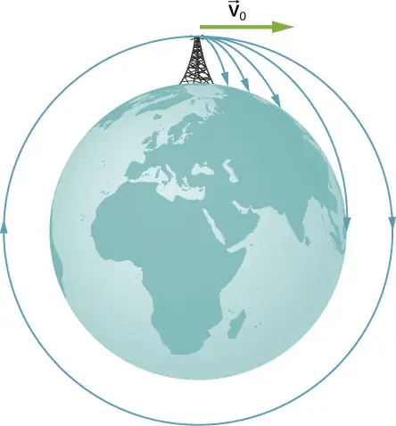
We can summarize our discussion of orbiting satellites in the following Problem-Solving Strategy.
Problem-Solving Strategy: Orbits and Conservation of Energy
- Determine whether the equations for speed, energy, or period are valid for the problem at hand. If not, start with the first principles we used to derive those equations.
- To start from first principles, draw a free-body diagram and apply Newton’s law of gravitation and Newton’s second law.
- Along with the definitions for speed and energy, apply Newton’s second law of motion to the bodies of interest.
Example 13.9 The International Space Station
Determine the orbital speed and period for the International Space Station (ISS).
Strategy
Since the ISS orbits \(4.00\:\times\:{10}^{2}\text{km}\) above Earth’s surface, the radius at which it orbits is \(R_{\text{E}}+4.00\:\times\:{10}^{2}\text{km}\). We use Equation 13.7 and Equation 13.8 to find the orbital speed and period, respectively.
Solution
Using Equation 13.7, the orbital velocity is
which is about 17,000 mph. Using Equation 13.8, the period is
which is just over 90 minutes.
Significance
The ISS is considered to be in low Earth orbit (LEO). Nearly all satellites are in LEO, including most weather satellites. GPS satellites, at about 20,000 km, are considered medium Earth orbit. The higher the orbit, the more energy is required to put it there and the more energy is needed to reach it for repairs. Of particular interest are the satellites in geosynchronous orbit. All fixed satellite dishes on the ground pointing toward the sky, such as TV reception dishes, are pointed toward geosynchronous satellites. These satellites are placed at the exact distance, and just above the equator, such that their period of orbit is 1 day. They remain in a fixed position relative to Earth’s surface.
Check Your Understanding
By what factor must the radius change to reduce the orbital velocity of a satellite by one-half? By what factor would this change the period?
Answer
In Equation 13.7, the radius appears in the denominator inside the square root. So the radius must increase by a factor of 4, to decrease the orbital velocity by a factor of 2. The circumference of the orbit has also increased by this factor of 4, and so with half the orbital velocity, the period must be 8 times longer. That can also be seen directly from Equation 13.8.
Example 13.10 Determining the Mass of Earth
Determine the mass of Earth from the orbit of the Moon.
Strategy
We use Equation 13.8, solve for \(M_{\text{E}}\), and substitute for the period and radius of the orbit. The radius and period of the Moon’s orbit was measured with reasonable accuracy thousands of years ago. From the astronomical data in Appendix D, the period of the Moon is 27.3 days \(=2.36\:\times\:{10}^{6}\:\text{s}\), and the average distance between the centers of Earth and the Moon is 384,000 km.
Solution
Solving for \(M_{\text{E}}\),
Significance
Compare this to the value of \(5.96\:\times\:{10}^{24}\:\text{kg}\) that we obtained in Example 13.5, using the value of g at the surface of Earth. Although these values are very close (~0.8%), both calculations use average values. The value of g varies from the equator to the poles by approximately 0.5%. But the Moon has an elliptical orbit in which the value of r varies just over 10%. (The apparent size of the full Moon actually varies by about this amount, but it is difficult to notice through casual observation as the time from one extreme to the other is many months.)
Check Your Understanding
There is another consideration to this last calculation of \(M_{\text{E}}\). We derived Equation 13.8 assuming that the satellite orbits around the center of the astronomical body at the same radius used in the expression for the gravitational force between them. What assumption is made to justify this? Earth is about 81 times more massive than the Moon. Does the Moon orbit about the exact center of Earth?
Answer
The assumption is that orbiting object is much less massive than the body it is orbiting. This is not really justified in the case of the Moon and Earth. Both Earth and the Moon orbit about their common center of mass. We tackle this issue in the next example.
Example 13.11 Galactic Speed and Period
Let’s revisit Example 13.2. Assume that the Milky Way and Andromeda galaxies are in a circular orbit about each other. What would be the velocity of each and how long would their orbital period be? Assume the mass of each is 8 × 1011 solar masses and their centers are separated by 2.5 million light years.
Strategy
We cannot use Equation 13.7 and Equation 13.8 directly because they were derived assuming that the object of mass m orbited about the center of a much larger planet of mass M. We determined the gravitational force in Example 13.2 using Newton’s law of universal gravitation. We can use Newton’s second law, applied to the centripetal acceleration of either galaxy, to determine their tangential speed. From that result we can determine the period of the orbit.
Solution
In Example 13.2, we found the force between the galaxies to be
and that the acceleration of each galaxy is
Since the galaxies are in a circular orbit, they have centripetal acceleration. If we ignore the effect of other galaxies, then, as we learned in Linear Momentum and Collisions and Fixed-Axis Rotation, the centers of mass of the two galaxies remain fixed. Hence, the galaxies must orbit about this common center of mass. For equal masses, the center of mass is exactly half way between them. So the radius of the orbit, \(r_{\text{orbit}}\), is not the same as the distance between the galaxies, but one-half that value, or 1.25 million light-years. These two different values are shown in Figure 13.14.
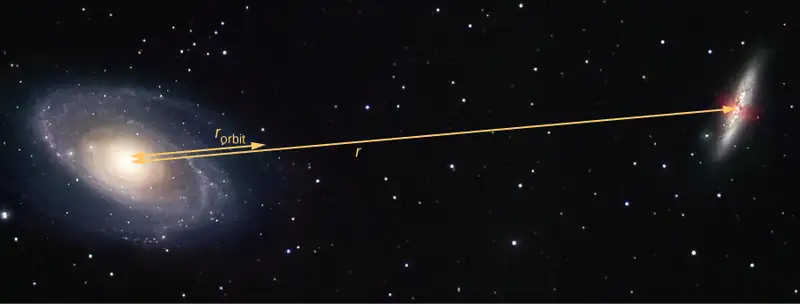
Using the expression for centripetal acceleration, we have
Solving for the orbit velocity, we have \(v_{\text{orbit}}=47\:\text{km/s}\). Finally, we can determine the period of the orbit directly from \(T=2\pi r\text{/}v_{\text{orbit}}\), to find that the period is \(T=1.6\:\times\:{10}^{18}\:\text{s}\), about 5 × 1010 years.
Significance
The orbital speed of 47 km/s might seem high at first. But this speed is comparable to the escape speed from the Sun, which we calculated in an earlier example. To give even more perspective, this period is nearly four times longer than the time that the Universe has been in existence.
In fact, the present relative motion of these two galaxies is such that they are expected to collide in about 4 × 109 years. Although the density of stars in each galaxy makes a direct collision of any two stars unlikely, such a collision will have a dramatic effect on the shape of the galaxies. Examples of such collisions are well known in astronomy.
Check Your Understanding
Galaxies are not single objects. How does the gravitational force of one galaxy exerted on the “closer” stars of the other galaxy compare to those farther away? What effect would this have on the shape of the galaxies themselves?
Answer
The stars on the “inside” of each galaxy will be closer to the other galaxy and hence will feel a greater gravitational force than those on the outside. Consequently, they will have a greater acceleration. Even without this force difference, the inside stars would be orbiting at a smaller radius, and, hence, there would develop an elongation or stretching of each galaxy. The force difference only increases this effect.
Media
See the Sloan Digital Sky Survey page for more information on colliding galaxies.
Engage the Phet simulation below to move the Sun, Earth, Moon, and space station to see the effects on their gravitational forces and orbital paths. Visualize the sizes and distances between different heavenly bodies, and turn off gravity to see what would happen without it.
Energy in Circular Orbits¶
In Gravitational Potential Energy and Total Energy, we argued that objects are gravitationally bound if their total energy is negative. The argument was based on the simple case where the velocity was directly away or toward the planet. We now examine the total energy for a circular orbit and show that indeed, the total energy is negative. As we did earlier, we start with Newton’s second law applied to a circular orbit,
In the last step, we multiplied by r on each side. The right side is just twice the kinetic energy, so we have
The total energy is the sum of the kinetic and potential energies, so our final result is
equation callout
We can see that the total energy is negative, with the same magnitude as the kinetic energy. For circular orbits, the magnitude of the kinetic energy is exactly one-half the magnitude of the potential energy. Remarkably, this result applies to any two masses in circular orbits about their common center of mass, at a distance r from each other. The proof of this is left as an exercise. We will see in the next section that a very similar expression applies in the case of elliptical orbits.
Example 13.12 Energy Required to Orbit
In Example 13.8, we calculated the energy required to simply lift the 9000-kg Soyuz vehicle from Earth’s surface to the height of the ISS, 400 km above the surface. In other words, we found its change in potential energy. We now ask, what total energy change in the Soyuz vehicle is required to take it from Earth’s surface and put it in orbit with the ISS for a rendezvous (Figure 13.15)? How much of that total energy is kinetic energy?
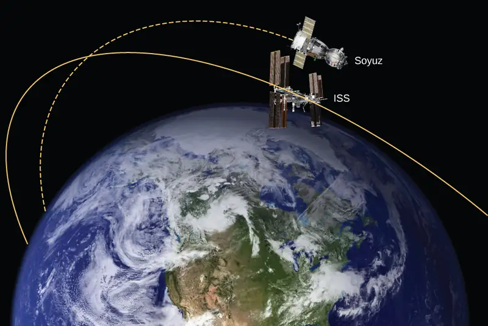
Strategy
The energy required is the difference in the Soyuz’s total energy in orbit and that at Earth’s surface. We can use Equation 13.9 to find the total energy of the Soyuz at the ISS orbit. But the total energy at the surface is simply the potential energy, since it starts from rest. [Note that we do not use Equation 13.9 at the surface, since we are not in orbit at the surface.] The kinetic energy can then be found from the difference in the total energy change and the change in potential energy found in Example 13.8. Alternatively, we can use Equation 13.7 to find \(v_{\text{orbit}}\) and calculate the kinetic energy directly from that. The total energy required is then the kinetic energy plus the change in potential energy found in Example 13.8.
Solution
From Equation 13.9, the total energy of the Soyuz in the same orbit as the ISS is
The total energy at Earth’s surface is
The change in energy is \(\Delta E=E_{\text{orbit}}-E_{\text{surface}}=2.98\:\times\:{10}^{11}\:\text{J}\). To get the kinetic energy, we subtract the change in potential energy from Example 13.6, \(\Delta U=3.32\:\times\:{10}^{10}\:\text{J}\). That gives us \(K_{\text{orbit}}=2.98\:\times\:{10}^{11}-3.32\:\times\:{10}^{10}=2.65\:\times\:{10}^{11}\:\text{J}\). As stated earlier, the kinetic energy of a circular orbit is always one-half the magnitude of the potential energy, and the same as the magnitude of the total energy. Our result confirms this.
The second approach is to use Equation 13.7 to find the orbital speed of the Soyuz, which we did for the ISS in Example 13.9.
So the kinetic energy of the Soyuz in orbit is
the same as in the previous method. The total energy is just
Significance
The kinetic energy of the Soyuz is nearly eight times the change in its potential energy, or 90% of the total energy needed for the rendezvous with the ISS. And it is important to remember that this energy represents only the energy that must be given to the Soyuz. With our present rocket technology, the mass of the propulsion system (the rocket fuel, its container and combustion system) far exceeds that of the payload, and a tremendous amount of kinetic energy must be given to that mass. So the actual cost in energy is many times that of the change in energy of the payload itself.
13.5 Kepler's Laws of Planetary Motion¶
Learning Objectives
By the end of this section, you will be able to:
- Describe the conic sections and how they relate to orbital motion
- Describe how orbital velocity is related to conservation of angular momentum
- Determine the period of an elliptical orbit from its major axis
Using the precise data collected by Tycho Brahe, Johannes Kepler carefully analyzed the positions in the sky of all the known planets and the Moon, plotting their positions at regular intervals of time. From this analysis, he formulated three laws, which we address in this section.
Kepler’s First Law¶
The prevailing view during the time of Kepler was that all planetary orbits were circular. The data for Mars presented the greatest challenge to this view and that eventually encouraged Kepler to give up the popular idea. Kepler’s first law states that every planet moves along an ellipse, with the Sun located at a focus of the ellipse. An ellipse is defined as the set of all points such that the sum of the distance from each point to two foci is a constant. Figure 13.16 shows an ellipse and describes a simple way to create it.
![Figure a shows an x y coordinate system and an ellipse centered on the origin with foci f 1 on the left and f 2 on the right, both on the x axis. Focus f 1 is also labeled M. A point above focus f 2 is labeled m. The right triangle formed by f 1, f 2, and m is shown in red. Figure b shows a similar ellipse, with the sun shown and labeled as M and as Sun at f 1. A planet mass m is shown above f 1, at a vertical distance r from f 1. The location where the ellipse intersects the horizontal axis on the left is labeled as point A, and the location where the ellipse intersects the horizontal axis on the right is labeled as point B.](img/cnx-uphysics-13-05-ellipse.webp)
For elliptical orbits, the point of closest approach of a planet to the Sun is called the perihelion. It is labeled point A in Figure 13.16. The farthest point is the aphelion and is labeled point B in the figure. For the Moon’s orbit about Earth, those points are called the perigee and apogee, respectively.
An ellipse has several mathematical forms, but all are a specific case of the more general equation for conic sections. There are four different conic sections, all given by the equation
equation callout
The variables r and \(\theta\) are shown in Figure 13.17 in the case of an ellipse. The constants \(\alpha\) and e are determined by the total energy and angular momentum of the satellite at a given point. The constant e is called the eccentricity. The values of \(\alpha\) and e determine which of the four conic sections represents the path of the satellite.
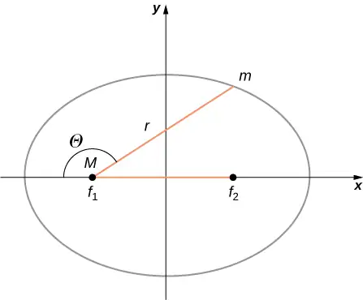
One of the real triumphs of Newton’s law of universal gravitation, with the force proportional to the inverse of the distance squared, is that when it is combined with his second law, the solution for the path of any satellite is a conic section. Every path taken by m is one of the four conic sections: a circle or an ellipse for bound or closed orbits, or a parabola or hyperbola for unbounded or open orbits. These conic sections are shown in Figure 13.18.
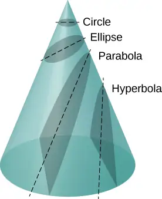
If the total energy is negative, then \(0\le e \lt 1\), and Equation 13.10 represents a bound or closed orbit of either an ellipse or a circle, where \(e=0\). [You can see from Equation 13.10 that for \(e=0\), \(r=\alpha\), and hence the radius is constant.] For ellipses, the eccentricity is related to how oblong the ellipse appears. A circle has zero eccentricity, whereas a very long, drawn-out ellipse has an eccentricity near one.
If the total energy is exactly zero, then \(e=1\) and the path is a parabola. Recall that a satellite with zero total energy has exactly the escape velocity. (The parabola is formed only by slicing the cone parallel to the tangent line along the surface.) Finally, if the total energy is positive, then \(e \gt 1\) and the path is a hyperbola. These last two paths represent unbounded orbits, where m passes by M once and only once. This situation has been observed for several comets that approach the Sun and then travel away, never to return.
We have confined ourselves to the case in which the smaller mass (planet) orbits a much larger, and hence stationary, mass (Sun), but Equation 13.10 also applies to any two gravitationally interacting masses. Each mass traces out the exact same-shaped conic section as the other. That shape is determined by the total energy and angular momentum of the system, with the center of mass of the system located at the focus. The ratio of the dimensions of the two paths is the inverse of the ratio of their masses.
Media
You can see an animation of two interacting objects at the My Solar System page at Phet. Choose the Sun and Planet preset option. You can also view the more complicated multiple body problems as well. You may find the actual path of the Moon quite surprising, yet is obeying Newton’s simple laws of motion.
Orbital Transfers¶
People have imagined traveling to the other planets of our solar system since they were discovered. But how can we best do this? The most efficient method was discovered in 1925 by Walter Hohmann, inspired by a popular science fiction novel of that time. The method is now called a Hohmann transfer. For the case of traveling between two circular orbits, the transfer is along a “transfer” ellipse that perfectly intercepts those orbits at the aphelion and perihelion of the ellipse. Figure 13.19 shows the case for a trip from Earth’s orbit to that of Mars. As before, the Sun is at the focus of the ellipse.
For any ellipse, the semi-major axis is defined as one-half the sum of the perihelion and the aphelion. In Figure 13.17, the semi-major axis is the distance from the origin to either side of the ellipse along the x-axis, or just one-half the longest axis (called the major axis). Hence, to travel from one circular orbit of radius \(r_{1}\) to another circular orbit of radius \(r_{2}\), the aphelion of the transfer ellipse will be equal to the value of the larger orbit, while the perihelion will be the smaller orbit. The semi-major axis, denoted a, is therefore given by \(a=\frac{1}{2}(r_{1}+r_{2})\).
![An illustration of the sun and three orbits around it are shown. All three orbits are circular. The innermost orbit is centered on the sun and is labeled Earth Orbit. The middle orbit is not centered on the sun. It coincides with the earth orbit at a point labeled “Launch” to the right of the sun. An arrow indicates the launch is up and left. The diameter of the orbit is labeled as being a distance 2 a and is shown from the launch point on the right to a point labeled “Arrival at Mars” on the left. The sun lies on this diameter. The outermost orbit is centered on the sun and is labeled Mars orbit. This orbit coincides with the middle orbit at the point marked as “Arrival at Mars.” A point in the second quadrant (located clockwise from the arrival point) is labeled Mars’ position at launch.](img/cnx-uphysics-13-05-transfer.webp)
Let’s take the case of traveling from Earth to Mars. For the moment, we ignore the planets and assume we are alone in Earth’s orbit and wish to move to Mars’ orbit. From Equation 13.9, the expression for total energy, we can see that the total energy for a spacecraft in the larger orbit (Mars) is greater (less negative) than that for the smaller orbit (Earth). To move onto the transfer ellipse from Earth’s orbit, we will need to increase our kinetic energy, that is, we need a velocity boost. The most efficient method is a very quick acceleration along the circular orbital path, which is also along the path of the ellipse at that point. (In fact, the acceleration should be instantaneous, such that the circular and elliptical orbits are congruent during the acceleration. In practice, the finite acceleration is short enough that the difference is not a significant consideration.) Once you have arrived at Mars orbit, you will need another velocity boost to move into that orbit, or you will stay on the elliptical orbit and simply fall back to perihelion where you started. For the return trip, you simply reverse the process with a retro-boost at each transfer point.
To make the move onto the transfer ellipse and then off again, we need to know each circular orbit velocity and the transfer orbit velocities at perihelion and aphelion. The velocity boost required is simply the difference between the circular orbit velocity and the elliptical orbit velocity at each point. We can find the circular orbital velocities from Equation 13.7. To determine the velocities for the ellipse, we state without proof (as it is beyond the scope of this course) that total energy for an elliptical orbit is
where \(M_{\text{S}}\) is the mass of the Sun and a is the semi-major axis. Remarkably, this is the same as Equation 13.9 for circular orbits, but with the value of the semi-major axis replacing the orbital radius. Since we know the potential energy from Equation 13.4, we can find the kinetic energy and hence the velocity needed for each point on the ellipse. We leave it as a challenge problem to find those transfer velocities for an Earth-to-Mars trip.
We end this discussion by pointing out a few important details. First, we have not accounted for the gravitational potential energy due to Earth and Mars, or the mechanics of landing on Mars. In practice, that must be part of the calculations. Second, timing is everything. You do not want to arrive at the orbit of Mars to find out it isn’t there. We must leave Earth at precisely the correct time such that Mars will be at the aphelion of our transfer ellipse just as we arrive. That opportunity comes about every 2 years. And returning requires correct timing as well. The total trip would take just under 3 years! There are other options that provide for a faster transit, including a gravity assist flyby of Venus. But these other options come with an additional cost in energy and danger to the astronauts.
Media
Visit this site for more details about planning a trip to Mars.
Kepler’s Second Law¶
Kepler’s second law states that a planet sweeps out equal areas in equal times, that is, the area divided by time, called the areal velocity, is constant. Consider Figure 13.20. The time it takes a planet to move from position A to B, sweeping out area \(A_{1}\), is exactly the time taken to move from position C to D, sweeping area \(A_{2}\), and to move from E to F, sweeping out area \(A_{3}\). These areas are the same: \(A_{1}=A_{2}=A_{3}\).
![An x y coordinate system is shown with the sun, also labeled as M, on the x axis to the left of the origin and an unlabeled point to the right of the origin. A planet, labeled also as m, is shown in the second quadrant. An arrow, labeled v, extends from the planet and points down and left, tangent to the orbit. Points A, B, C, D, E, and F are labeled on the orbit. Points A and B are in the third quadrant. The area of the region defined by A B and the sun is labeled A 1. Points C and D are in on the orbit on either side of the – y axis. The area of the region defined by C D and the sun is labeled A 2. Points E and F are in the first quadrant. The area of the region defined by E F and the sun is labeled A 3. The pair of points A B have the largest distance between them and is closest to the sun. E F have the smallest distance between them and are farthest from the sun.](img/cnx-uphysics-13-05-keplers2nd.webp)
Comparing the areas in the figure and the distance traveled along the ellipse in each case, we can see that in order for the areas to be equal, the planet must speed up as it gets closer to the Sun and slow down as it moves away. This behavior is completely consistent with our conservation equation, Equation 13.5. But we will show that Kepler’s second law is actually a consequence of the conservation of angular momentum, which holds for any system with only radial forces.
Recall the definition of angular momentum from Angular Momentum, \(\mathbf{\vec{L}}=\mathbf{\vec{r}}\:\times\:\mathbf{\vec{p}}\). For the case of orbiting motion, \(\mathbf{\vec{L}}\) is the angular momentum of the planet about the Sun, \(\overrightarrow{\mathbf{r}}\) is the position vector of the planet measured from the Sun, and \(\mathbf{\vec{p}}=m\mathbf{\vec{v}}\) is the instantaneous linear momentum at any point in the orbit. Since the planet moves along the ellipse, \(\mathbf{\vec{p}}\) is always tangent to the ellipse.
We can resolve the linear momentum into two components: a radial component \({\mathbf{\vec{p}}}_{\text{rad}}\) along the line to the Sun, and a component \({\mathbf{\vec{p}}}_{\text{perp}}\) perpendicular to \(\mathbf{\vec{r}}\). The cross product for angular momentum can then be written as
\(\mathbf{\vec{L}}=\mathbf{\vec{r}}\:\times\:\mathbf{\vec{p}}=\mathbf{\vec{r}}\:\times\:({\mathbf{\vec{p}}}_{\text{rad}}+{\mathbf{\vec{p}}}_{\text{perp}})=\mathbf{\vec{r}}\:\times\:{\mathbf{\vec{p}}}_{\text{rad}}+\mathbf{\vec{r}}\:\times\:{\mathbf{\vec{p}}}_{\text{perp}}\).
The first term on the right is zero because \(\mathbf{\vec{r}}\) is parallel to \({\mathbf{\vec{p}}}_{\text{rad}}\), and in the second term \(\mathbf{\vec{r}}\) is perpendicular to \({\mathbf{\vec{p}}}_{\text{perp}}\), so the magnitude of the cross product reduces to \(L=rp_{\text{perp}}=rmv_{\text{perp}}\). Note that the angular momentum does not depend upon \(p_{\text{rad}}\). Since the gravitational force is only in the radial direction, it can change only \(p_{\text{rad}}\) and not \(p_{\text{perp}}\); hence, the angular momentum must remain constant.
Now consider Figure 13.21. A small triangular area \(\Delta A\) is swept out in time \(\Delta t\). The velocity is along the path and it makes an angle \(\theta\) with the radial direction. Hence, the perpendicular velocity is given by \(v_{\text{perp}}=v\sin\theta\). The planet moves a distance \(\Delta s=v\Delta t\sin\theta\) projected along the direction perpendicular to r. Since the area of a triangle is one-half the base (r) times the height \((\Delta s)\), for a small displacement, the area is given by \(\Delta A=\frac{1}{2}r\Delta s\). Substituting for \(\Delta s\), multiplying by m in the numerator and denominator, and rearranging, we obtain
![A diagram showing the sun and a planet separated by a distance r. The velocity vector of the planet is shown as an arrow pointing at an obtuse angle to the distance r between the sun and planet. The line connecting the sun and planet is extended past the planet as a dashed line, and another dashed line is drawn from the tip of the velocity arrow to the dashed extension of r. The dashed lines meet at a right angle and form a triangle with the velocity arrow forming the hypotenuse and the planet at one vertex. The angle near the planet is labeled theta. The hypotenuse is also labeled v delta t, and the side opposite the planet labeled v delta t sin theta. The triangular region defined by the sun, planet and the tip of the velocity arrow is labeled Delta A, and the angle near the sun is labeled delta phi.](img/cnx-uphysics-13-05-area.webp)
The areal velocity is simply the rate of change of area with time, so we have
Since the angular momentum is constant, the areal velocity must also be constant. This is exactly Kepler’s second law. As with Kepler’s first law, Newton showed it was a natural consequence of his law of gravitation.
Media
You can view an animated version of Figure 13.20, and many other interesting animations as well, at the School of Physics (University of New South Wales) site.
Kepler’s Third Law¶
Kepler’s third law states that the square of the period is proportional to the cube of the semi-major axis of the orbit. In Satellite Orbits and Energy, we derived Kepler’s third law for the special case of a circular orbit. Equation 13.8 gives us the period of a circular orbit of radius r about Earth:
For an ellipse, recall that the semi-major axis is one-half the sum of the perihelion and the aphelion. For a circular orbit, the semi-major axis (a) is the same as the radius for the orbit. In fact, Equation 13.8 gives us Kepler’s third law if we simply replace r with a and square both sides.
equation callout
We have changed the mass of Earth to the more general M, since this equation applies to satellites orbiting any large mass.
Example 13.13 Orbit of Halley’s Comet
Determine the semi-major axis of the orbit of Halley’s comet, given that it arrives at perihelion every 75.3 years. If the perihelion is 0.586 AU, what is the aphelion?
Strategy
We are given the period, so we can rearrange Equation 13.11, solving for the semi-major axis. Since we know the value for the perihelion, we can use the definition of the semi-major axis, given earlier in this section, to find the aphelion. We note that 1 Astronomical Unit (AU) is the average radius of Earth’s orbit and is defined to be \(1\:\text{AU}=1.50\:\times\:{10}^{11}\:\text{m}\).
Solution
Rearranging Equation 13.11 and inserting the values of the period of Halley’s comet and the mass of the Sun, we have
This yields a value of \(2.67\:\times\:{10}^{12}\:\text{m}\) or 17.8 AU for the semi-major axis.
The semi-major axis is one-half the sum of the aphelion and perihelion, so we have
Substituting for the values, we found for the semi-major axis and the value given for the perihelion, we find the value of the aphelion to be 35.0 AU.
Significance
Edmond Halley, a contemporary of Newton, first suspected that three comets, reported in 1531, 1607, and 1682, were actually the same comet. Before Tycho Brahe made measurements of comets, it was believed that they were one-time events, perhaps disturbances in the atmosphere, and that they were not affected by the Sun. Halley used Newton’s new mechanics to predict his namesake comet’s return in 1758.
Check Your Understanding
The nearly circular orbit of Saturn has an average radius of about 9.5 AU and has a period of 30 years, whereas Uranus averages about 19 AU and has a period of 84 years. Is this consistent with our results for Halley’s comet?
Answer
The semi-major axis for the highly elliptical orbit of Halley’s comet is 17.8 AU and is the average of the perihelion and aphelion. This lies between the 9.5 AU and 19 AU orbital radii for Saturn and Uranus, respectively. The radius for a circular orbit is the same as the semi-major axis, and since the period increases with an increase of the semi-major axis, the fact that Halley’s period is between the periods of Saturn and Uranus is expected.
13.6 Tidal Forces¶
Learning Objectives
By the end of this section, you will be able to:
- Explain the origins of Earth’s ocean tides
- Describe how neap and leap tides differ
- Describe how tidal forces affect binary systems
The origin of Earth’s ocean tides has been a subject of continuous investigation for over 2000 years. But the work of Newton is considered to be the beginning of the true understanding of the phenomenon. Ocean tides are the result of gravitational tidal forces. These same tidal forces are present in any astronomical body. They are responsible for the internal heat that creates the volcanic activity on Io, one of Jupiter’s moons, and the breakup of stars that get too close to black holes.
Lunar Tides¶
If you live on an ocean shore almost anywhere in the world, you can observe the rising and falling of the sea level about twice per day. This is caused by a combination of Earth’s rotation about its axis and the gravitational attraction of both the Moon and the Sun.
Let’s consider the effect of the Moon first. In Figure 13.22, we are looking “down” onto Earth’s North Pole. One side of Earth is closer to the Moon than the other side, by a distance equal to Earth’s diameter. Hence, the gravitational force is greater on the near side than on the far side. The magnitude at the center of Earth is between these values. This is why a tidal bulge appears on both sides of Earth.
![The figure is an illustration of the earth centered within an exaggerated ellipse whose major axis is horizontal. The moon is shown to the right of the earth, moving counterclockwise. The left side of the ellipse is labeled as High tide, with a note that says “on far side, moon pulls earth more than water, creating a high tide.” The right side of the ellipse is labeled as High tide, with a note that says “on near side, moon pulls water more than earth, creating a high tide.” The top and bottom of the ellipse are labeled “Low tide.”](img/cnx-uphysics-13-06-moontides.webp)
The net force on Earth causes it to orbit about the Earth-Moon center of mass, located about 1600 km below Earth’s surface along the line between Earth and the Moon. The tidal force can be viewed as the difference between the force at the center of Earth and that at any other location. In Figure 13.23, this difference is shown at sea level, where we observe the ocean tides. (Note that the change in sea level caused by these tidal forces is measured from the baseline sea level. We saw earlier that Earth bulges many kilometers at the equator due to its rotation. This defines the baseline sea level and here we consider only the much smaller tidal bulge measured from that baseline sea level.)
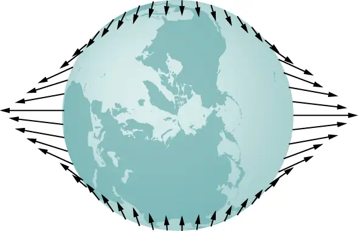
Why does the rise and fall of the tides occur twice per day? Look again at Figure 13.22. If Earth were not rotating and the Moon was fixed, then the bulges would remain in the same location on Earth. Relative to the Moon, the bulges stay fixed—along the line connecting Earth and the Moon. But Earth rotates (in the direction shown by the blue arrow) approximately every 24 hours. In 6 hours, the near and far locations of Earth move to where the low tides are occurring, and 6 hours later, those locations are back to the high-tide position. Since the Moon also orbits Earth approximately every 28 days, and in the same direction as Earth rotates, the time between high (and low) tides is actually about 12.5 hours. The actual timing of the tides is complicated by numerous factors, the most important of which is another astronomical body—the Sun.
The Effect of the Sun on Tides¶
In addition to the Moon’s tidal forces on Earth’s oceans, the Sun exerts a tidal force as well. The gravitational attraction of the Sun on any object on Earth is nearly 200 times that of the Moon. However, as we show later in an example, the tidal effect of the Sun is less than that of the Moon, but a significant effect nevertheless. Depending upon the positions of the Moon and Sun relative to Earth, the net tidal effect can be amplified or attenuated.
Figure 13.22 illustrates the relative positions of the Sun and the Moon that create the largest tides, called spring tides (or leap tides). During spring tides, Earth, the Moon, and the Sun are aligned and the tidal effects add. (Recall that the tidal forces cause bulges on both sides.) Figure 13.22(c) shows the relative positions for the smallest tides, called neap tides. The extremes of both high and low tides are affected. Spring tides occur during the new or full moon, and neap tides occur at half-moon.
Media
You can see an animation of the tides in motion.
![Figure a shows the earth centered within a horizontal shaded ellipse labeled spring tide. The sun is positioned to the right of the earth and the moon is in line, in between the earth and sun, and orbits counterclockwise. Figure b shows the earth centered within a horizontal shaded ellipse labeled spring tide. The sun is positioned to the right of the earth and the moon is in line with the earth and sun but to the left of the earth, and orbits counterclockwise. Figure c shows the earth centered within a vertical shaded ellipse labeled neap tide. The sun is positioned to the right of the earth and the moon is below the earth, and orbits counterclockwise. The ellipse in part c has a noticeably smaller vertical major axis than the horizontal major axes of the ellipses in parts a and b.](img/cnx-uphysics-13-06-moretides.webp)
The Magnitude of the Tides¶
With accurate data for the positions of the Moon and the Sun, the time of maximum and minimum tides at most locations on our planet can be predicted accurately.
Media
Visit this site to generate tide predictions for up to 2 years in the past or future, at more than 3000 locations around the United States.
The magnitude of the tides, however, is far more complicated. The relative angles of Earth and the Moon determine spring and neap tides, but the magnitudes of these tides are affected by the distances from Earth as well. Tidal forces are greater when the distances are smaller. Both the Moon’s orbit about Earth and Earth’s orbit about the Sun are elliptical, so a spring tide is exceptionally large if it occurs when the Moon is at perigee and Earth is at perihelion. Conversely, it is relatively small if it occurs when the Moon is at apogee and Earth is at aphelion.
The greatest causes of tide variation are the topography of the local shoreline and the bathymetry (the profile of the depth) of the ocean floor. The range of tides due to these effects is astounding. Although ocean tides are much smaller than a meter in many places around the globe, the tides at the Bay of Fundy (Figure 13.25), on the east coast of Canada, can be as much as 16.3 meters.
Example 13.14 Comparing Tidal Forces
Compare the Moon’s gravitational force on a 1.0-kg mass located on the near side and another on the far side of Earth. Repeat for the Sun and then compare the results to confirm that the Moon’s tidal forces are about twice that of the Sun.
Strategy
We use Newton’s law of gravitation given by Equation 13.1. We need the masses of the Moon and the Sun and their distances from Earth, as well as the radius of Earth. We use the astronomical data from Appendix D.
Solution
Substituting the mass of the Moon and mean distance from Earth to the Moon, we have
In the denominator, we use the minus sign for the near side and the plus sign for the far side. The results are
The Moon’s gravitational force is nearly 7% higher at the near side of Earth than at the far side, but both forces are much less than that of Earth itself on the 1.0-kg mass. Nevertheless, this small difference creates the tides. We now repeat the problem, but substitute the mass of the Sun and the mean distance between the Earth and Sun. The results are
We have to keep six significant digits since we wish to compare the difference between them to the difference for the Moon. (Although we can’t justify the absolute value to this accuracy, since all values in the calculation are the same except the distances, the accuracy in the difference is still valid to three digits.) The difference between the near and far forces on a 1.0-kg mass due to the Moon is
whereas the difference for the Sun is
Note that a more proper approach is to write the difference in the two forces with the difference between the near and far distances explicitly expressed. With just a bit of algebra we can show that
where \(r_{1}^{}\) and \(r_{2}^{}\) are the same to three significant digits, but their difference \((r_{2}-r_{1})\), equal to the diameter of Earth, is also known to three significant digits. The results of the calculation are the same. This approach would be necessary if the number of significant digits needed exceeds that available on your calculator or computer.
Significance
Note that the forces exerted by the Sun are nearly 200 times greater than the forces exerted by the Moon. But the difference in those forces for the Sun is half that for the Moon. This is the nature of tidal forces. The Moon has a greater tidal effect because the fractional change in distance from the near side to the far side is so much greater for the Moon than it is for the Sun.
Check Your Understanding
Earth exerts a tidal force on the Moon. Is it greater than, the same as, or less than that of the Moon on Earth? Be careful in your response, as tidal forces arise from the difference in gravitational forces between one side and the other. Look at the calculations we performed for the tidal force on Earth and consider the values that would change significantly for the Moon. The diameter of the Moon is one-fourth that of Earth. Tidal forces on the Moon are not easy to detect, since there is no liquid on the surface.
Answer
Consider the last equation above. The values of \(r_{1}\) and \(r_{2}\) remain nearly the same, but the diameter of the Moon, \((r_{2}^{}-r_{1}^{})\), is one-fourth that of Earth. So the tidal forces on the Moon are about one-fourth as great as on Earth.
Other Tidal Effects¶
Tidal forces exist between any two bodies. The effect stretches the bodies along the line between their centers. Although the tidal effect on Earth’s seas is observable on a daily basis, long-term consequences cannot be observed so easily. One consequence is the dissipation of rotational energy due to friction during flexure of the bodies themselves. Earth’s rotation rate is slowing down as the tidal forces transfer rotational energy into heat. The other effect, related to this dissipation and conservation of angular momentum, is called “locking” or tidal synchronization. It has already happened to most moons in our solar system, including Earth’s Moon. The Moon keeps one face toward Earth—its rotation rate has locked into the orbital rate about Earth. The same process is happening to Earth, and eventually it will keep one face toward the Moon. If that does happen, we would no longer see tides, as the tidal bulge would remain in the same place on Earth, and half the planet would never see the Moon. However, this locking will take many billions of years, perhaps not before our Sun expires.
One of the more dramatic example of tidal effects is found on Io, one of Jupiter’s moons. In 1979, the Voyager spacecraft sent back dramatic images of volcanic activity on Io. It is the only other astronomical body in our solar system on which we have found such activity. Figure 13.26 shows a more recent picture of Io taken by the New Horizons spacecraft on its way to Pluto, while using a gravity assist from Jupiter.
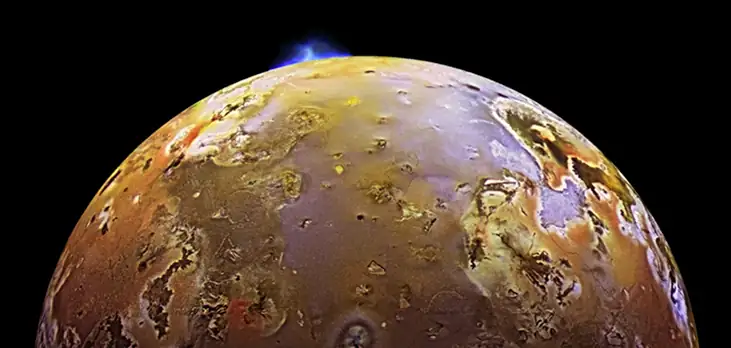
For some stars, the effect of tidal forces can be catastrophic. The tidal forces in very close binary systems can be strong enough to rip matter from one star to the other, once the tidal forces exceed the cohesive self-gravitational forces that hold the stars together. This effect can be seen in normal stars that orbit nearby compact stars, such as neutron stars or black holes. Figure 13.27 shows an artist’s rendition of this process. As matter falls into the compact star, it forms an accretion disc that becomes super-heated and radiates in the X-ray spectrum.
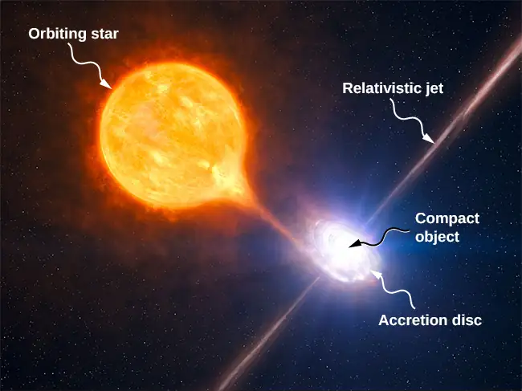
The energy output of these binary systems can exceed the typical output of thousands of stars. Another example might be a quasar. Quasars are very distant and immensely bright objects, often exceeding the energy output of entire galaxies. It is the general consensus among astronomers that they are, in fact, massive black holes producing radiant energy as matter that has been tidally ripped from nearby stars falls into them.
13.7 Einstein's Theory of Gravity¶
Learning Objectives
By the end of this section, you will be able to:
- Describe how the theory of general relativity approaches gravitation
- Explain the principle of equivalence
- Calculate the Schwarzschild radius of an object
- Summarize the evidence for black holes
Newton’s law of universal gravitation accurately predicts much of what we see within our solar system. Indeed, only Newton’s laws have been needed to accurately send every space vehicle on its journey. The paths of Earth-crossing asteroids, and most other celestial objects, can be accurately determined solely with Newton’s laws. Nevertheless, many phenomena have shown a discrepancy from what Newton’s laws predict, including the orbit of Mercury and the effect that gravity has on light. In this section, we examine a different way of envisioning gravitation.
A Revolution in Perspective¶
In 1905, Albert Einstein published his theory of special relativity. This theory is discussed in great detail in Relativity, so we say only a few words here. In this theory, no motion can exceed the speed of light—it is the speed limit of the Universe. This simple fact has been verified in countless experiments. However, it has incredible consequences—space and time are no longer absolute. Two people moving relative to one another do not agree on the length of objects or the passage of time. Almost all of the mechanics you learned in previous chapters, while remarkably accurate even for speeds of many thousands of miles per second, begin to fail when approaching the speed of light.
This speed limit on the Universe was also a challenge to the inherent assumption in Newton’s law of gravitation that gravity is an action-at-a-distance force. That is, without physical contact, any change in the position of one mass is instantly communicated to all other masses. This assumption does not come from any first principle, as Newton’s theory simply does not address the question. (The same was believed of electromagnetic forces, as well. It is fair to say that most scientists were not completely comfortable with the action-at-a-distance concept.)
A second assumption also appears in Newton’s law of gravitation Equation 13.1. The masses are assumed to be exactly the same as those used in Newton’s second law, \(\mathbf{\vec{F}}=m\mathbf{\vec{a}}\). We made that assumption in many of our derivations in this chapter. Again, there is no underlying principle that this must be, but experimental results are consistent with this assumption. In Einstein’s subsequent theory of general relativity (1916), both of these issues were addressed. His theory was a theory of space-time geometry and how mass (and acceleration) distort and interact with that space-time. It was not a theory of gravitational forces. The mathematics of the general theory is beyond the scope of this text, but we can look at some underlying principles and their consequences.
The Principle of Equivalence¶
Einstein came to his general theory in part by wondering why someone who was free falling did not feel their weight. Indeed, it is common to speak of astronauts orbiting Earth as being weightless, despite the fact that Earth’s gravity is still quite strong there. In Einstein’s general theory, there is no difference between free fall and being weightless. This is called the principle of equivalence. The equally surprising corollary to this is that there is no difference between a uniform gravitational field and a uniform acceleration in the absence of gravity. Let’s focus on this last statement. Although a perfectly uniform gravitational field is not feasible, we can approximate it very well.
Within a reasonably sized laboratory on Earth, the gravitational field \(\mathbf{\vec{g}}\) is essentially uniform. The corollary states that any physical experiments performed there have the identical results as those done in a laboratory accelerating at \(\mathbf{\vec{a}}=\mathbf{\vec{g}}\) in deep space, well away from all other masses. Figure 13.28 illustrates the concept.
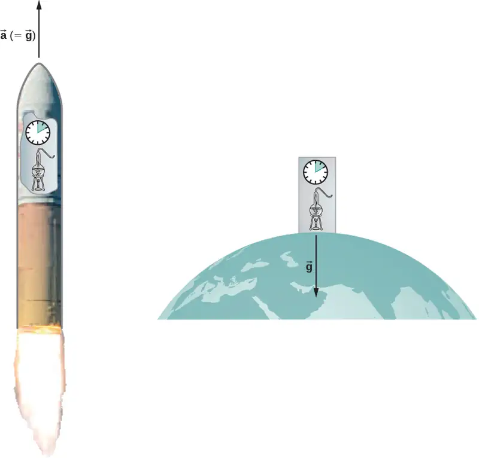
How can these two apparently fundamentally different situations be the same? The answer is that gravitation is not a force between two objects but is the result of each object responding to the effect that the other has on the space-time surrounding it. A uniform gravitational field and a uniform acceleration have exactly the same effect on space-time.
A Geometric Theory of Gravity¶
Euclidian geometry assumes a “flat” space in which, among the most commonly known attributes, a straight line is the shortest distance between two points, the sum of the angles of all triangles must be 180 degrees, and parallel lines never intersect. Non-Euclidean geometry was not seriously investigated until the nineteenth century, so it is not surprising that Euclidean space is inherently assumed in all of Newton’s laws.
The general theory of relativity challenges this long-held assumption. Only empty space is flat. The presence of mass—or energy, since relativity does not distinguish between the two—distorts or curves space and time, or space-time, around it. The motion of any other mass is simply a response to this curved space-time. Figure 13.29 is a two-dimensional representation of a smaller mass orbiting in response to the distorted space created by the presence of a larger mass. In a more precise but confusing picture, we would also see space distorted by the orbiting mass, and both masses would be in motion in response to the total distortion of space. Note that the figure is a representation to help visualize the concept. These are distortions in our three-dimensional space and time. We do not see them as we would a dimple on a ball. We see the distortion only by careful measurements of the motion of objects and light as they move through space.
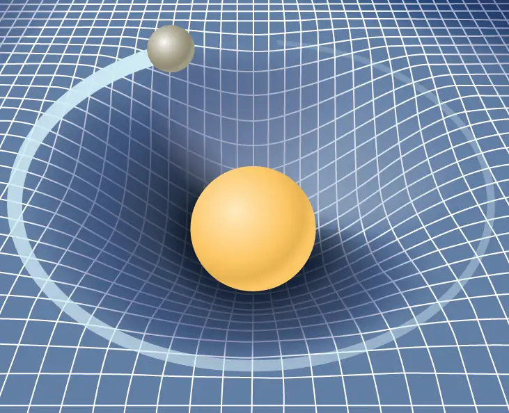
For weak gravitational fields, the results of general relativity do not differ significantly from Newton’s law of gravitation. But for intense gravitational fields, the results diverge, and general relativity has been shown to predict the correct results. Even in our Sun’s relatively weak gravitational field at the distance of Mercury’s orbit, we can observe the effect. Starting in the mid-1800s, Mercury’s elliptical orbit has been carefully measured. However, although it is elliptical, its motion is complicated by the fact that the perihelion position of the ellipse slowly advances. Most of the advance is due to the gravitational pull of other planets, but a small portion of that advancement could not be accounted for by Newton’s law. At one time, there was even a search for a “companion” planet that would explain the discrepancy. But general relativity correctly predicts the measurements. Since then, many measurements, such as the deflection of light of distant objects by the Sun, have verified that general relativity correctly predicts the observations.
We close this discussion with one final comment. We have often referred to distortions of space-time or distortions in both space and time. In both special and general relativity, the dimension of time has equal footing with each spatial dimension (differing in its place in both theories only by an ultimately unimportant scaling factor). Near a very large mass, not only is the nearby space “stretched out,” but time is dilated or “slowed.” We discuss these effects more in the next section.
Black Holes¶
Einstein’s theory of gravitation is expressed in one deceptively simple-looking tensor equation (tensors are a generalization of scalars and vectors), which expresses how a mass determines the curvature of space-time around it. The solutions to that equation yield one of the most fascinating predictions: the black hole. The prediction is that if an object is sufficiently dense, it will collapse in upon itself and be surrounded by an event horizon from which nothing can escape. The name “black hole,” which was coined by astronomer John Wheeler in 1969, refers to the fact that light cannot escape such an object. Karl Schwarzschild was the first person to note this phenomenon in 1916, but at that time, it was considered mostly to be a mathematical curiosity.
Surprisingly, the idea of a massive body from which light cannot escape dates back to the late 1700s. Independently, John Michell and Pierre-Simon Laplace used Newton’s law of gravitation to show that light leaving the surface of a star with enough mass could not escape. Their work was based on the fact that the speed of light had been measured by Ole Rømer in 1676. He noted discrepancies in the data for the orbital period of the moon Io about Jupiter. Rømer realized that the difference arose from the relative positions of Earth and Jupiter at different times and that he could find the speed of light from that difference. Michell and Laplace both realized that since light had a finite speed, there could be a star massive enough that the escape speed from its surface could exceed that speed. Hence, light always would fall back to the star. Oddly, observers far enough away from the very largest stars would not be able to see them, yet they could see a smaller star from the same distance.
Recall that in Gravitational Potential Energy and Total Energy, we found that the escape speed, given by Equation 13.6, is independent of the mass of the object escaping. Even though the nature of light was not fully understood at the time, the mass of light, if it had any, was not relevant. Hence, Equation 13.6 should be valid for light. Substituting c, the speed of light, for the escape velocity, we have
Thus, we only need values for R and M such that the escape velocity exceeds c, and then light will not be able to escape. Michell posited that if a star had the density of our Sun and a radius that extended just beyond the orbit of Mars, then light would not be able to escape from its surface. He also conjectured that we would still be able to detect such a star from the gravitational effect it would have on objects around it. This was an insightful conclusion, as this is precisely how we infer the existence of such objects today. While we have yet to, and may never, visit a black hole, the circumstantial evidence for them has become so compelling that few astronomers doubt their existence.
Before we examine some of that evidence, we turn our attention back to Schwarzschild’s solution to the tensor equation from general relativity. In that solution arises a critical radius, now called the Schwarzschild radius \((R_{\text{S}})\). For any mass M, if that mass were compressed to the extent that its radius becomes less than the Schwarzschild radius, then the mass will collapse to a singularity, and anything that passes inside that radius cannot escape. Once inside \(R_{\text{S}}\), the arrow of time takes all things to the singularity. (In a broad mathematical sense, a singularity is where the value of a function goes to infinity. In this case, it is a point in space of zero volume with a finite mass. Hence, the mass density and gravitational energy become infinite.) The Schwarzschild radius is given by
equation callout
If you look at our escape velocity equation with \(v_{\text{esc}}^{}=c\), you will notice that it gives precisely this result. But that is merely a fortuitous accident caused by several incorrect assumptions. One of these assumptions is the use of the incorrect classical expression for the kinetic energy for light. Just how dense does an object have to be in order to turn into a black hole?
Example 13.15 Calculating the Schwarzschild Radius
Calculate the Schwarzschild radius for both the Sun and Earth. Compare the density of the nucleus of an atom to the density required to compress Earth’s mass uniformly to its Schwarzschild radius. The density of a nucleus is about \(2.3\:\times\:{10}^{17}\:\text{kg/m}^{3}\).
Strategy
We use Equation 13.12 for this calculation. We need only the masses of Earth and the Sun, which we obtain from the astronomical data given in Appendix D.
Solution
Substituting the mass of the Sun, we have
This is a diameter of only about 6 km. If we use the mass of Earth, we get \(R_{\text{S}}=8.85\:\times\:{10}^{-3}\:\text{m}\). This is a diameter of less than 2 cm! If we pack Earth’s mass into a sphere with the radius \(R_{\text{S}}=8.85\:\times\:{10}^{-3}\:\text{m}\), we get a density of
Significance
A neutron star is the most compact object known—outside of a black hole itself. The neutron star is composed of neutrons, with the density of an atomic nucleus, and, like many black holes, is believed to be the remnant of a supernova—a star that explodes at the end of its lifetime. To create a black hole from Earth, we would have to compress it to a density thirteen orders of magnitude greater than that of a neutron star. This process would require unimaginable force. There is no known mechanism that could cause an Earth-sized object to become a black hole. For the Sun, you should be able to show that it would have to be compressed to a density only about 80 times that of a nucleus. (Note: Once the mass is compressed within its Schwarzschild radius, general relativity dictates that it will collapse to a singularity. These calculations merely show the density we must achieve to initiate that collapse.)
Check Your Understanding
Consider the density required to make Earth a black hole compared to that required for the Sun. What conclusion can you draw from this comparison about what would be required to create a black hole? Would you expect the Universe to have many black holes with small mass?
Answer
Given the incredible density required to force an Earth-sized body to become a black hole, we do not expect to see such small black holes. Even a body with the mass of our Sun would have to be compressed by a factor of 80 beyond that of a neutron star. It is believed that stars of this size cannot become black holes. However, for stars with a few solar masses, it is believed that gravitational collapse at the end of a star’s life could form a black hole. As we will discuss later, it is now believed that black holes are common at the center of galaxies. These galactic black holes typically contain the mass of many millions of stars.
The event horizon¶
The Schwarzschild radius is also called the event horizon of a black hole. We noted that both space and time are stretched near massive objects, such as black holes. Figure 13.30 illustrates that effect on space. The distortion caused by our Sun is actually quite small, and the diagram is exaggerated for clarity. Consider the neutron star, described in Example 13.15. Although the distortion of space-time at the surface of a neutron star is very high, the radius is still larger than its Schwarzschild radius. Objects could still escape from its surface.
However, if a neutron star gains additional mass, it would eventually collapse, shrinking beyond the Schwarzschild radius. Once that happens, the entire mass would be pulled, inevitably, to a singularity. In the diagram, space is stretched to infinity. Time is also stretched to infinity. As objects fall toward the event horizon, we see them approaching ever more slowly, but never reaching the event horizon. As outside observers, we never see objects pass through the event horizon—effectively, time is stretched to a stop.
Media
Visit this site to view an animated example of these spatial distortions.
![On the left are three illustrations of space time as a grid with increasingly deep dimples with an object at the bottom of the dimple. The top drawing is labeled sun, and has a shallow dimple. The middle figure is labeled white dwarf and has a deeper dimple and more distorted grid lines. The third figure is labeled neutron star. The dimple is very deep and its sides are nearly vertical. The region above the star is labeled distorted space time. On the right is a larger illustration of the effects of a black hole. The dimple is now a bend that becomes a flared tube that becomes vertical and is open at the bottom. The bottom of the tube is labeled singularity. The grid lines in the tube form vertical lines and a spiral. A circular cross section of the tube is labeled event horizon. A circle where the space time grid bends to form the top of the tube is labeled last stable orbit.](img/cnx-uphysics-13-07-spacetime.webp)
Observational evidence of neutron stars and black holes¶
The first validated neutron star was discovered by Jocelyn Bell Burnell in 1967. Burnell observed a regular radio pulse from an distant object, a phenomenon not previously observed. After further analysis and the discovery of a second pulsar (as the objects would later be called), the researchers and scientific community recognized that the pulses were caused by rapidly rotating neutron stars. At about the same time, a number of other astronomers, including Iosof Shklovsky, observed radio sources that would be proven to be neutron stars. These discoveries renewed interest in black holes. Evidence for black holes is based upon several types of observations, such as radiation analysis of X-ray binaries, gravitational lensing of the light from distant galaxies, and the motion of visible objects around invisible partners. We will focus on these later observations as they relate to what we have learned in this chapter. Although light cannot escape from a black hole for us to see, we can nevertheless see the gravitational effect of the black hole on surrounding masses.
The closest, and perhaps most dramatic, evidence for a black hole is at the center of our Milky Way galaxy. The UCLA Galactic Group, using data obtained by the W. M. Keck telescopes, has determined the orbits of several stars near the center of our galaxy. Some of that data is shown in Figure 13.31. The orbits of two stars are highlighted. From measurements of the periods and sizes of their orbits, it is estimated that they are orbiting a mass of approximately 4 million solar masses. Note that the mass must reside in the region created by the intersection of the ellipses of the stars. The region in which that mass must reside would fit inside the orbit of Mercury—yet nothing is seen there in the visible spectrum. In 2020, UCLA astrophysicist Andrea Ghez and Plank Institute's (Germany) Reinhardt Genzel shared the Nobel prize for the discovery of the supermassive object. They shared the prize with Richard Penrose, whose mathematical models proved that black holes can actually form and align with Einstein's theory. Since their work, the world has actually seen a black hole, thanks to the Event Horizon Telescope. The global network of observatories combined massive amounts of data in order to produce remarkable images of two black holes: first at the center of galaxy Messier 87, and second at the center of the Milky Way, Saggitarious A.
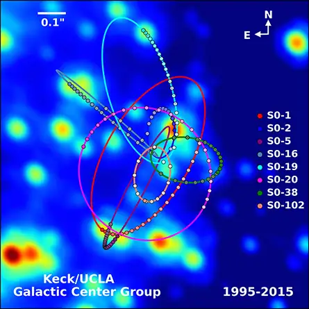
The physics of stellar creation and evolution is well established. The ultimate source of energy that makes stars shine is the self-gravitational energy that triggers fusion. The general behavior is that the more massive a star, the brighter it shines and the shorter it lives. The logical inference is that a mass that is 4 million times the mass of our Sun, confined to a very small region, and that cannot be seen, has no viable interpretation other than a black hole. Extragalactic observations strongly suggest that black holes are common at the center of galaxies.
Media
Visit the UCLA Galactic Center Group main page for information on X-ray binaries and gravitational lensing. Visit this page to view the background and the image of the black hole at the center of the Milky Way.
Dark matter¶
Stars orbiting near the very heart of our galaxy provide strong evidence for a black hole there, but the orbits of stars far from the center suggest another intriguing phenomenon that is observed indirectly as well. Recall from Gravitation Near Earth’s Surface that we can consider the mass for spherical objects to be located at a point at the center for calculating their gravitational effects on other masses. Similarly, we can treat the total mass that lies within the orbit of any star in our galaxy as being located at the center of the Milky Way disc. We can estimate that mass from counting the visible stars and include in our estimate the mass of the black hole at the center as well.
But when we do that, we find the orbital speed of the stars is far too fast to be caused by that amount of matter. Astronomer Vera Rubin disovered this phenomenon in the 1970s while researching the movement of spiral galaxies. She observed that their outermost reaches were rotating as quickly as their centers, which was not the predicted outcome. Figure 13.32 shows the orbital velocities of stars as a function of their distance from the center of the Milky Way. The blue line represents the velocities we would expect from our estimates of the mass, whereas the green curve is what we get from direct measurements. Rubin calculated that the rotational velocity of galaxies should have been enough to cause them to fly apart, unless there was a significant discrepancy between their observable matter and their actual matter. This became known as the galaxy rotation problem. Rubin proposed that massive amounts of unseen matter must be present in and around the galaxies for the rotation speeds to occur. Furthermore, the velocity profile does not follow what we expect from the observed distribution of visible stars. Not only is the estimate of the total mass inconsistent with the data, but the expected distribution is inconsistent as well. Rubin’s 1978 discovery provided much more concrete and widespread evidence of dark matter, a term Fritz Zwicky coined in 1933 when he observed a similar anomaly while examining a galaxy cluster.
![Graph of Galaxy rotation curve plotting orbital velocity in arbitrary units as a function of radius, r, in kiloparsecs. The horizontal axis scale is 0 to 14 kiloparsecs, in increments of 2. The vertical axis scale is 0 to 1.6 in increments of 0.2. A green curve is labeled Observed. The curve starts at r=0, v=0.9, rises to almost v=1.4 at r a little less than 2, then decreases to about v = 1.3 at about r = 4, then more slowly to about v = 1.2 at r = 14. A blue curve is labeled Expected. The curve starts at r=0, v=1.0 ad rises to a maximum value that is smaller than the green curve’s and at a smaller value of r. The curve then decreases smoothly with steadily decreasing slope to v approximately 0.5 at r = 14.Three additional gray curves are also shown. A dotted curve labeled dark matter starts at r=0, v=0 and rises smoothly with steadily decreasing slope to v approximately 0.9 at r = 14. A dot-dashed curve labeled Bulge (light) also starts at r=0, v=0 and rises to a maximum value of about v = 0.5 at an r between 1 and 2, then decreases smoothly with steadily decreasing slope to v approximately 0.2 at r = 14. A dashed curve labeled Disk (light) starts at r=0, v=1 and decreases smoothly with steadily decreasing slope to v approximately 0.3 at r = 14.](img/cnx-uphysics-13-07-darkmat.webp)
There are two prevailing ideas of what this matter could be—WIMPs and MACHOs. WIMPs stands for weakly interacting massive particles. These particles (neutrinos are one example) interact very weakly with ordinary matter and, hence, are very difficult to detect directly. MACHOs stands for massive compact halo objects, which are composed of ordinary baryonic matter, such as neutrons and protons. There are unresolved issues with both of these ideas, and far more research will be needed to solve the mystery.
Chapter Review¶
Key Terms¶
- action-at-a-distance force
- type of force exerted without physical contact
- aphelion
- farthest point from the Sun of an orbiting body; the corresponding term for the Moon’s farthest point from Earth is the apogee
- apparent weight
- reading of the weight of an object on a scale that does not account for acceleration
- black hole
- mass that becomes so dense, that it collapses in on itself, creating a singularity at the center surround by an event horizon
- escape velocity
- initial velocity an object needs to escape the gravitational pull of another; it is more accurately defined as the velocity of an object with zero total mechanical energy
- event horizon
- location of the Schwarzschild radius and is the location near a black hole from within which no object, even light, can escape
- gravitational field
- vector field that surrounds the mass creating the field; the field is represented by field lines, in which the direction of the field is tangent to the lines, and the magnitude (or field strength) is inversely proportional to the spacing of the lines; other masses respond to this field
- gravitationally bound
- two object are gravitationally bound if their orbits are closed; gravitationally bound systems have a negative total mechanical energy
- Kepler’s first law
- law stating that every planet moves along an ellipse, with the Sun located at a focus of the ellipse
- Kepler’s second law
- law stating that a planet sweeps out equal areas in equal times, meaning it has a constant areal velocity
- Kepler’s third law
- law stating that the square of the period is proportional to the cube of the semi-major axis of the orbit
- neap tide
- low tide created when the Moon and the Sun form a right triangle with Earth
- neutron star
- most compact object known—outside of a black hole itself
- Newton’s law of gravitation
- every mass attracts every other mass with a force proportional to the product of their masses, inversely proportional to the square of the distance between them, and with direction along the line connecting the center of mass of each
- non-Euclidean geometry
- geometry of curved space, describing the relationships among angles and lines on the surface of a sphere, hyperboloid, etc.
- orbital period
- time required for a satellite to complete one orbit
- orbital speed
- speed of a satellite in a circular orbit; it can be also be used for the instantaneous speed for noncircular orbits in which the speed is not constant
- perihelion
- point of closest approach to the Sun of an orbiting body; the corresponding term for the Moon’s closest approach to Earth is the perigee
- principle of equivalence
- part of the general theory of relativity, it states that there no difference between free fall and being weightless, or a uniform gravitational field and uniform acceleration
- Schwarzschild radius
- critical radius (\(R_{\text{S}}\)) such that if a mass were compressed to the extent that its radius becomes less than the Schwarzschild radius, then the mass will collapse to a singularity, and anything that passes inside that radius cannot escape
- space-time
- concept of space-time is that time is essentially another coordinate that is treated the same way as any individual spatial coordinate; in the equations that represent both special and general relativity, time appears in the same context as do the spatial coordinates
- spring tide
- high tide created when the Moon, the Sun, and Earth are along one line
- theory of general relativity
- Einstein’s theory for gravitation and accelerated reference frames; in this theory, gravitation is the result of mass and energy distorting the space-time around it; it is also often referred to as Einstein’s theory of gravity
- tidal force
- difference between the gravitational force at the center of a body and that at any other location on the body; the tidal force stretches the body
- universal gravitational constant
- constant representing the strength of the gravitational force, that is believed to be the same throughout the universe
Key Equations¶
| Newton’s law of gravitation | \({\mathbf{\vec{F}}}_{12}=G\frac{m_{1}m_{2}}{r^{2}}{\mathbf{\hat{r}}}_{12}\) |
| Acceleration due to gravity at the surface of Earth |
\(g=G\frac{M_{\text{E}}}{r_{}^{2}}\) |
| Gravitational potential energy beyond Earth | \(U=-\frac{GM_{\text{E}}m}{r}\) |
| Conservation of energy | \(\frac{1}{2}mv_{1}^{2}-\frac{GMm}{r_{1}}=\frac{1}{2}mv_{2}^{2}-\frac{GMm}{r_{2}}\) |
| Escape velocity | \(v_{\text{esc}}=\sqrt{\frac{2GM}{R}}\) |
| Orbital speed | \(v_{\text{orbit}}=\sqrt{\frac{\text{GM}_{\text{E}}}{r}}\) |
| Orbital period | \(T=2\pi\sqrt{\frac{r^{3}}{\text{GM}_{\text{E}}}}\) |
| Energy in circular orbit | \(E=K+U=-\frac{Gm\text{M}_{\text{E}}}{2r}\) |
| Conic sections | \(\frac{\alpha}{r}=1+e\cos\theta\) |
| Kepler’s third law | \(T^{2}=\frac{4\pi^{2}}{GM}a^{3}\) |
| Schwarzschild radius | \(R_{\text{S}}=\frac{2GM}{c^{2}}\) |
Summary¶
13.1 Newton's Law of Universal Gravitation¶
- All masses attract one another with a gravitational force proportional to their masses and inversely proportional to the square of the distance between them.
- Spherically symmetrical masses can be treated as if all their mass were located at the center.
- Nonsymmetrical objects can be treated as if their mass were concentrated at their center of mass, provided their distance from other masses is large compared to their size.
13.2 Gravitation Near Earth's Surface¶
- The weight of an object is the gravitational attraction between Earth and the object.
- The gravitational field is represented as lines that indicate the direction of the gravitational force; the line spacing indicates the strength of the field.
- Apparent weight differs from actual weight due to the acceleration of the object.
13.3 Gravitational Potential Energy and Total Energy¶
- The acceleration due to gravity changes as we move away from Earth, and the expression for gravitational potential energy must reflect this change.
- The total energy of a system is the sum of kinetic and gravitational potential energy, and this total energy is conserved in orbital motion.
- Objects must have a minimum velocity, the escape velocity, to leave a planet and not return.
- Objects with total energy less than zero are bound; those with zero or greater are unbounded.
13.4 Satellite Orbits and Energy¶
- Orbital velocities are determined by the mass of the body being orbited and the distance from the center of that body, and not by the mass of a much smaller orbiting object.
- The period of the orbit is likewise independent of the orbiting object’s mass.
- Bodies of comparable masses orbit about their common center of mass and their velocities and periods should be determined from Newton’s second law and law of gravitation.
13.5 Kepler's Laws of Planetary Motion¶
- All orbital motion follows the path of a conic section. Bound or closed orbits are either a circle or an ellipse; unbounded or open orbits are either a parabola or a hyperbola.
- The areal velocity of any orbit is constant, a reflection of the conservation of angular momentum.
- The square of the period of an elliptical orbit is proportional to the cube of the semi-major axis of that orbit.
13.6 Tidal Forces¶
- Earth’s tides are caused by the difference in gravitational forces from the Moon and the Sun on the different sides of Earth.
- Spring or neap (high) tides occur when Earth, the Moon, and the Sun are aligned, and neap or (low) tides occur when they form a right triangle.
- Tidal forces can create internal heating, changes in orbital motion, and even destruction of orbiting bodies.
13.7 Einstein's Theory of Gravity¶
- According to the theory of general relativity, gravity is the result of distortions in space-time created by mass and energy.
- The principle of equivalence states that that both mass and acceleration distort space-time and are indistinguishable in comparable circumstances.
- Black holes, the result of gravitational collapse, are singularities with an event horizon that is proportional to their mass.
- Evidence for the existence of black holes is still circumstantial, but the amount of that evidence is overwhelming.
Conceptual Questions¶
13.1 Newton's Law of Universal Gravitation¶
1. Action at a distance, such as is the case for gravity, was once thought to be illogical and therefore untrue. What is the ultimate determinant of the truth in science, and why was this action at a distance ultimately accepted?
Answer
The ultimate truth is experimental verification. Field theory was developed to help explain how force is exerted without objects being in contact for both gravity and electromagnetic forces that act at the speed of light. It has only been since the twentieth century that we have been able to measure that the force is not conveyed immediately.
2. In the law of universal gravitation, Newton assumed that the force was proportional to the product of the two masses (\(\sim m_{1}m_{2}\)). While all scientific conjectures must be experimentally verified, can you provide arguments as to why this must be? (You may wish to consider simple examples in which any other form would lead to contradictory results.)
13.2 Gravitation Near Earth's Surface¶
3. Must engineers take Earth’s rotation into account when constructing very tall buildings at any location other than the equator or very near the poles?
Answer
The centripetal acceleration is not directed along the gravitational force and therefore the correct line of the building (i.e., the plumb bob line) is not directed towards the center of Earth. But engineers use either a plumb bob or a transit, both of which respond to both the direction of gravity and acceleration. No special consideration for their location on Earth need be made.
13.3 Gravitational Potential Energy and Total Energy¶
4. It was stated that a satellite with negative total energy is in a bound orbit, whereas one with zero or positive total energy is in an unbounded orbit. Why is this true? What choice for gravitational potential energy was made such that this is true?
5. It was shown that the energy required to lift a satellite into a low Earth orbit (the change in potential energy) is only a small fraction of the kinetic energy needed to keep it in orbit. Is this true for larger orbits? Is there a trend to the ratio of kinetic energy to change in potential energy as the size of the orbit increases?
Answer
As we move to larger orbits, the change in potential energy increases, whereas the orbital velocity decreases. Hence, the ratio is highest near Earth’s surface (technically infinite if we orbit at Earth’s surface with no elevation change), moving to zero as we reach infinitely far away.
13.4 Satellite Orbits and Energy¶
6. One student argues that a satellite in orbit is in free fall because the satellite keeps falling toward Earth. Another says a satellite in orbit is not in free fall because the acceleration due to gravity is not \(9.80\:\text{m/s}^{2}\). With whom do you agree with and why?
7. Many satellites are placed in geosynchronous orbits. What is special about these orbits? For a global communication network, how many of these satellites would be needed?
Answer
The period of the orbit must be 24 hours. But in addition, the satellite must be located in an equatorial orbit and orbiting in the same direction as Earth’s rotation. All three criteria must be met for the satellite to remain in one position relative to Earth’s surface. At least three satellites are needed, as two on opposite sides of Earth cannot communicate with each other. (This is not technically true, as a wavelength could be chosen that provides sufficient diffraction. But it would be totally impractical.)
13.5 Kepler's Laws of Planetary Motion¶
8. Are Kepler’s laws purely descriptive, or do they contain causal information?
9. In the diagram below for a satellite in an elliptical orbit about a much larger mass, indicate where its speed is the greatest and where it is the least. What conservation law dictates this behavior? Indicate the directions of the force, acceleration, and velocity at these points. Draw vectors for these same three quantities at the two points where the y-axis intersects (along the semi-minor axis) and from this determine whether the speed is increasing decreasing, or at a max/min.
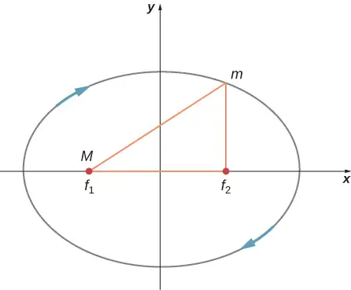
Answer
The speed is greatest where the satellite is closest to the large mass and least where farther away—at the periapsis and apoapsis, respectively. It is conservation of angular momentum that governs this relationship. But it can also be gleaned from conservation of energy, the kinetic energy must be greatest where the gravitational potential energy is the least (most negative). The force, and hence acceleration, is always directed towards M in the diagram, and the velocity is always tangent to the path at all points. The acceleration vector has a tangential component along the direction of the velocity at the upper location on the y-axis; hence, the satellite is speeding up. Just the opposite is true at the lower position.
13.6 Tidal Forces¶
10. As an object falls into a black hole, tidal forces increase. Will these tidal forces always tear the object apart as it approaches the Schwarzschild radius? How does the mass of the black hole and size of the object affect your answer?
13.7 Einstein's Theory of Gravity¶
11. The principle of equivalence states that all experiments done in a lab in a uniform gravitational field cannot be distinguished from those done in a lab that is not in a gravitational field but is uniformly accelerating. For the latter case, consider what happens to a laser beam at some height shot perfectly horizontally to the floor, across the accelerating lab. (View this from a nonaccelerating frame outside the lab.) Relative to the height of the laser, where will the laser beam hit the far wall? What does this say about the effect of a gravitational field on light? Does the fact that light has no mass make any difference to the argument?
Answer
The laser beam will hit the far wall at a lower elevation than it left, as the floor is accelerating upward. Relative to the lab, the laser beam “falls.” So we would expect this to happen in a gravitational field. The mass of light, or even an object with mass, is not relevant.
12. As a person approaches the Schwarzschild radius of a black hole, outside observers see all the processes of that person (their clocks, their heart rate, etc.) slowing down, and coming to a halt as they reach the Schwarzschild radius. (The person falling into the black hole sees their own processes unaffected.) But the speed of light is the same everywhere for all observers. What does this say about space as you approach the black hole?
Problems¶
13.1 Newton's Law of Universal Gravitation¶
13. Evaluate the magnitude of gravitational force between two 5-kg spherical steel balls separated by a center-to-center distance of 15 cm.
Answer
\(7.4\:\times\:{10}^{-8}\:\text{N}\)
14. Estimate the gravitational force between two sumo wrestlers, with masses 220 kg and 240 kg, when they are embraced and their centers are 1.2 m apart.
15. Astrology makes much of the position of the planets at the moment of one’s birth. The only known force a planet exerts on Earth is gravitational. (a) Calculate the gravitational force exerted on a 4.20-kg baby by a 100-kg father 0.200 m away at birth (he is assisting, so he is close to the child). (b) Calculate the force on the baby due to Jupiter if it is at its closest distance to Earth, some \(6.29\:\times\:{10}^{11}\:\text{m}\) away. How does the force of Jupiter on the baby compare to the force of the father on the baby? Other objects in the room and the hospital building also exert similar gravitational forces. (Of course, there could be an unknown force acting, but scientists first need to be convinced that there is even an effect, much less that an unknown force causes it.)
Answer
a. \(7.01\:\times\:{10}^{-7}\:\text{N}\); b. The mass of Jupiter is
\(\begin{array}{c} m_{\text{J}}=1.90\:\times\:{10}^{27}\:\text{kg} \\ F_{\text{J}}=1.35\:\times\:{10}^{-6}\:\text{N} \\ \frac{F_{\text{f}}}{F_{\text{J}}}=0.521 \end{array}\)
16. A mountain 10.0 km from a person exerts a gravitational force on the person equal to 2.00% of their weight. (a) Calculate the mass of the mountain. (b) Compare the mountain’s mass with that of Earth. (c) What is unreasonable about these results? (d) Which premises are unreasonable or inconsistent? (Note that accurate gravitational measurements can easily detect the effect of nearby mountains and variations in local geology.)
17. The International Space Station has a mass of approximately 370,000 kg. (a) What is the force on a 150-kg suited astronaut if she is 20 m from the center of mass of the station? (b) How accurate do you think your answer would be?
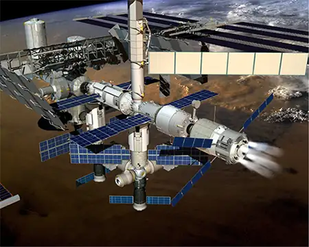
Answer
a. \(9.25\:\times\:{10}^{-6}\:\text{N}\); b. Not very, as the ISS is not even symmetrical, much less spherically symmetrical.
18. Asteroid Toutatis passed near Earth in 2006 at four times the distance to our Moon. This was the closest approach we will have until 2060. If it has mass of \(5.0\:\times\:{10}^{13}\:\text{kg}\), what force did it exert on Earth at its closest approach?
19. (a) What was the acceleration of Earth caused by asteroid Toutatis (see previous problem) at its closest approach? (b) What was the acceleration of Toutatis at this point?
Answer
a. \(1.41\:\times\:{10}^{-15}\text{m/s}^{2}\); b. \(1.69\:\times\:{10}^{-4}\:\text{m/s}^{2}\)
13.2 Gravitation Near Earth's Surface¶
20. (a) Calculate Earth’s mass given the acceleration due to gravity at the North Pole is measured to be \(9.832\:\text{m/s}^{2}\) and the radius of the Earth at the pole is 6356 km. (b) Compare this with the NASA’s Earth Fact Sheet value of \(5.9726\:\times\:{10}^{24}\:\text{kg}\).
21. (a) What is the acceleration due to gravity on the surface of the Moon? (b) On the surface of Mars? The mass of Mars is \(6.418\:\times\:{10}^{23}\:\text{kg}\) and its radius is \(3.38\:\times\:{10}^{6}\:\text{m}\).
Answer
a. \(1.62\:\text{m/s}^{2}\); b. \(3.75\:\text{m/s}^{2}\)
22. (a) Calculate the acceleration due to gravity on the surface of the Sun. (b) By what factor would your weight increase if you could stand on the Sun? (Never mind that you cannot.)
23. The mass of a particle is 15 kg. (a) What is its weight on Earth? (b) What is its weight on the Moon? (c) What is its mass on the Moon? (d) What is its weight in outer space far from any celestial body? (e) What is its mass at this point?
Answer
a. 147 N; b. 25.5 N; c. 15 kg; d. 0; e. 15 kg
24. On a planet whose radius is \(1.2\:\times\:{10}^{7}\:\text{m}\), the acceleration due to gravity is \(18\:\text{m/s}^{2}\). What is the mass of the planet?
25. The mean diameter of the planet Saturn is \(1.2\:\times\:{10}^{8}\:\text{m}\), and its mean mass density is \(0.69\:\text{g/cm}^{3}\). Find the acceleration due to gravity at Saturn’s surface.
Answer
\(12\:\text{m/s}^{2}\)
26. The mean diameter of the planet Mercury is \(4.88\:\times\:{10}^{6}\:\text{m}\), and the acceleration due to gravity at its surface is \(3.78\:\text{m/s}^{2}\). Estimate the mass of this planet.
27. The acceleration due to gravity on the surface of a planet is three times as large as it is on the surface of Earth. The mass density of the planet is known to be twice that of Earth. What is the radius of this planet in terms of Earth’s radius?
Answer
\((3\text{/}2)R_{\text{E}}\)
28. A body on the surface of a planet with the same radius as Earth’s weighs 10 times more than it does on Earth. What is the mass of this planet in terms of Earth’s mass?
13.3 Gravitational Potential Energy and Total Energy¶
29. Find the escape speed of a projectile from the surface of Mars.
Answer
5000 m/s
30. Find the escape speed of a projectile from the surface of Jupiter.
31. What is the escape speed of a satellite located at the Moon’s orbit about Earth? Assume the Moon is not nearby.
Answer
1440 m/s
32. (a) Evaluate the gravitational potential energy between two 5.00-kg spherical steel balls separated by a center-to-center distance of 15.0 cm. (b) Assuming that they are both initially at rest relative to each other in deep space, use conservation of energy to find how fast will they be traveling upon impact. Each sphere has a radius of 5.10 cm.
33. An average-sized asteroid located \(5.0\:\times\:{10}^{7}\text{km}\) from Earth with mass \(2.0\:\times\:{10}^{13}\:\text{kg}\) is detected headed directly toward Earth with speed of 2.0 km/s. What will its speed be just before it hits our atmosphere? (You may ignore the size of the asteroid.)
Answer
11 km/s
34. (a) What will be the kinetic energy of the asteroid in the previous problem just before it hits Earth? b) Compare this energy to the output of the largest fission bomb, 2100 TJ. What impact would this have on Earth?
35. (a) What is the change in energy of a 1000-kg payload taken from rest at the surface of Earth and placed at rest on the surface of the Moon? (b) What would be the answer if the payload were taken from the Moon’s surface to Earth? Is this a reasonable calculation of the energy needed to move a payload back and forth?
Answer
a. \(5.85\:\times\:{10}^{10}\:\text{J}\); b. \(-5.85\:\times\:{10}^{10}\:\text{J}\); No. It assumes the kinetic energy is recoverable. This would not even be reasonable if we had an elevator between Earth and the Moon.
13.4 Satellite Orbits and Energy¶
36. If a planet with 1.5 times the mass of Earth was traveling in Earth’s orbit, what would its period be?
37. Two planets in circular orbits around a star have speeds of v and 2v. (a) What is the ratio of the orbital radii of the planets? (b) What is the ratio of their periods?
Answer
a. 0.25; b. 0.125
38. Using the average distance of Earth from the Sun, and the orbital period of Earth, (a) find the centripetal acceleration of Earth in its motion about the Sun. (b) Compare this value to that of the centripetal acceleration at the equator due to Earth’s rotation.
39. (a) What is the orbital radius of an Earth satellite having a period of 1.00 h? (b) What is unreasonable about this result?
Answer
a. \(5.08\:\times\:{10}^{3}\:\text{km}\); b. This less than the radius of Earth.
40. Calculate the mass of the Sun based on data for Earth’s orbit and compare the value obtained with the Sun’s actual mass.
41. Find the mass of Jupiter based on the fact that Io, its innermost moon, has an average orbital radius of 421,700 km and a period of 1.77 days.
Answer
\(1.89\:\times\:{10}^{27}\:\text{kg}\)
42. Astronomical observations of light from the Milky Way galaxy's stars indicate that it has a mass of about \(8.0\:\times\:{10}^{11}\) solar masses. A star orbiting on the galaxy’s periphery is about \(6.0\:\times\:{10}^{4}\) light-years from its center. (a) What should the orbital period of that star be? (b) If its period is \(6.0\:\times\:{10}^{7}\) years instead, what is the mass of the galaxy? Such calculations are used to imply the existence of mass that does not emit any light. Scientists do not know what it is comprised of, so this mass is known simply as "dark matter" and remains an enduring astronomical mystery.
43. (a) In order to keep a small satellite from drifting into a nearby asteroid, it is placed in orbit with a period of 3.02 hours and radius of 2.0 km. What is the mass of the asteroid? (b) Does this mass seem reasonable for the size of the orbit?
Answer
a. \(4.01\:\times\:{10}^{13}\:\text{kg}\); b. The satellite must be outside the radius of the asteroid, so it can’t be larger than this. If it were this size, then its density would be about \(1200\:\text{kg/m}^{3}\). This is just above that of water, so this seems quite reasonable.
44. The Moon and Earth rotate about their common center of mass, which is located about 4700 km from the center of Earth. (This is 1690 km below the surface.) (a) Calculate the acceleration due to the Moon’s gravity at that point. (b) Calculate the centripetal acceleration of the center of Earth as it rotates about that point once each lunar month (about 27.3 d) and compare it with the acceleration found in part (a). Comment on whether or not they are equal and why they should or should not be.
45. The Sun orbits the Milky Way galaxy once each \(2.60\:\times\:{10}^{8}\:\text{years}\), with a roughly circular orbit averaging a radius of \(3.00\:\times\:{10}^{4}\) light-years. (A light-year is the distance traveled by light in 1 year.) Calculate the centripetal acceleration of the Sun in its galactic orbit. Does your result support the contention that a nearly inertial frame of reference can be located at the Sun? (b) Calculate the average speed of the Sun in its galactic orbit. Does the answer surprise you?
Answer
a. \(1.66\:\times\:{10}^{-10}\:\text{m/s}^{2}\); Yes, the centripetal acceleration is so small it supports the contention that a nearly inertial frame of reference can be located at the Sun. b. \(2.17\:\times\:{10}^{5}\text{m}\text{/}\text{s}\)
46. A geosynchronous Earth satellite is one that has an orbital period of precisely 1 day. Such orbits are useful for communication and weather observation because the satellite remains above the same point on Earth (provided it orbits in the equatorial plane in the same direction as Earth’s rotation). Calculate the radius of such an orbit based on the data for Earth in Appendix D.
13.5 Kepler's Laws of Planetary Motion¶
47. Calculate the mass of the Sun based on data for average Earth’s orbit and compare the value obtained with the Sun’s commonly listed value of \(1.989\:\times\:{10}^{30}\:\text{kg}\).
Answer
\(1.98\:\times\:{10}^{30}\:\text{kg}\); The values are the same within 0.05%.
48. Io orbits Jupiter with an average radius of 421,700 km and a period of 1.769 days. Based upon these data, what is the mass of Jupiter?
49. The “mean” orbital radius listed for astronomical objects orbiting the Sun is typically not an integrated average but is calculated such that it gives the correct period when applied to the equation for circular orbits. Given that, what is the mean orbital radius in terms of aphelion and perihelion?
Answer
Compare Equation 13.8 and Equation 13.11 to see that they differ only in that the circular radius, r, is replaced by the semi-major axis, a. Therefore, the mean radius is one-half the sum of the aphelion and perihelion, the same as the semi-major axis.
50. The perihelion of Halley’s comet is 0.586 AU and the aphelion is 17.8 AU. Given that its speed at perihelion is 55 km/s, what is the speed at aphelion (\(1\:\text{AU}=1.496\:\times\:{10}^{11}\:\text{m}\))? (Hint: You may use either conservation of energy or angular momentum, but the latter is much easier.)
51. The perihelion of the comet Lagerkvist is 2.61 AU and it has a period of 7.36 years. Show that the aphelion for this comet is 4.95 AU.
Answer
The semi-major axis, 3.78 AU is found from the equation for the period. This is one-half the sum of the aphelion and perihelion, giving an aphelion distance of 4.95 AU.
52. What is the ratio of the speed at perihelion to that at aphelion for the comet Lagerkvist in the previous problem?
53. Eros has an elliptical orbit about the Sun, with a perihelion distance of 1.13 AU and aphelion distance of 1.78 AU. What is the period of its orbit?
Answer
1.75 years
13.6 Tidal Forces¶
54. (a) What is the difference between the forces on a 1.0-kg mass on the near side of Io and far side due to Jupiter? Io has a mean radius of 1821 km and a mean orbital radius about Jupiter of 421,700 km. (b) Compare this difference to that calculated for the difference for Earth due to the Moon calculated in Example 13.14. Tidal forces are the cause of Io’s volcanic activity.
55. If the Sun were to collapse into a black hole, the point of no return for an investigator would be approximately 3 km from the center singularity. Would the investigator be able to survive visiting even 300 km from the center? Answer this by finding the difference in the gravitational attraction the black holes exerts on a 1.0-kg mass at the head and at the feet of the investigator.
Answer
19,800 N; this is clearly not survivable
56. Consider Figure 13.23 in Tidal Forces. This diagram represents the tidal forces for spring tides. Sketch a similar diagram for neap tides. (Hint: For simplicity, imagine that the Sun and the Moon contribute equally. Your diagram would be the vector sum of two force fields (as in Figure 13.23), reduced by a factor of two, and superimposed at right angles.)
13.7 Einstein's Theory of Gravity¶
57. What is the Schwarzschild radius for the black hole at the center of our galaxy if it has the mass of 4 million solar masses?
Answer
\(1.19\:\times\:{10}^{7}\text{km}\)
58. What would be the Schwarzschild radius, in light years, if our Milky Way galaxy of 1 × 1011 stars collapsed into a black hole? Compare this to our distance from the center, about 13,000 light years.
Additional Problems¶
59. A neutron star is a cold, collapsed star with nuclear density. A particular neutron star has a mass twice that of our Sun with a radius of 12.0 km. (a) What would be the weight of a 100-kg astronaut on standing on its surface? (b) What does this tell us about landing on a neutron star?
Answer
a. \(1.85\:\times\:{10}^{14}\:\text{N}\); b. Don’t do it!
60. (a) How far from the center of Earth would the net gravitational force of Earth and the Moon on an object be zero? (b) Setting the magnitudes of the forces equal should result in two answers from the quadratic. Do you understand why there are two positions, but only one where the net force is zero?
61. How far from the center of the Sun would the net gravitational force of Earth and the Sun on a spaceship be zero?
Answer
\(1.49\:\times\:{10}^{8}\text{km}\)
62. Calculate the values of g at Earth’s surface for the following changes in Earth’s properties: (a) its mass is doubled and its radius is halved; (b) its mass density is doubled and its radius is unchanged; (c) its mass density is halved and its mass is unchanged.
63. Suppose you can communicate with the inhabitants of a planet in another solar system. They tell you that on their planet, whose diameter and mass are \(5.0\:\times\:{10}^{3}\:\text{km}\) and \(3.6\:\times\:{10}^{23}\:\text{kg}\), respectively, the record for the high jump is 2.0 m. Given that this record is close to 2.4 m on Earth, what would you conclude about your extraterrestrial friends’ jumping ability?
Answer
The value of g for this planet is 3.8 m/s2, which is about one-fourth that of Earth. So they are weak high jumpers.
64. (a) Suppose that your measured weight at the equator is one-half your measured weight at the pole on a planet whose mass and diameter are equal to those of Earth. What is the rotational period of the planet? (b) Would you need to take the shape of this planet into account?
65. A body of mass 100 kg is weighed at the North Pole and at the equator with a spring scale. What is the scale reading at these two points? Assume that \(g=9.83\:\text{m/s}^{2}\) at the pole.
Answer
At the North Pole, 983 N; at the equator, 980 N
66. Find the speed needed to escape from the solar system starting from the surface of Earth. Assume there are no other bodies involved and do not account for the fact that Earth is moving in its orbit. [Hint: Equation 13.6 does not apply. Use Equation 13.5 and include the potential energy of both Earth and the Sun.
67. Consider the previous problem and include the fact that Earth has an orbital speed about the Sun of 29.8 km/s. (a) What speed relative to Earth would be needed and in what direction should you leave Earth? (b) What will be the shape of the trajectory?
Answer
a. The escape velocity is still 43.6 km/s. By launching from Earth in the direction of Earth’s tangential velocity, you need \(43.4-29.8=13.8\:\text{km/s}\) relative to Earth. b. The total energy is zero and the trajectory is a parabola.
68. A comet is observed 1.50 AU from the Sun with a speed of 24.3 km/s. Is this comet in a bound or unbound orbit?
69. An asteroid has speed 15.5 km/s when it is located 2.00 AU from the sun. At its closest approach, it is 0.400 AU from the Sun. What is its speed at that point?
Answer
61.5 km/s
70. Space debris left from old satellites and their launchers is becoming a hazard to other satellites. (a) Calculate the speed of a satellite in an orbit 900 km above Earth’s surface. (b) Suppose a loose rivet is in an orbit of the same radius that intersects the satellite’s orbit at an angle of \(90{}^{\circ}\). What is the velocity of the rivet relative to the satellite just before striking it? (c) If its mass is 0.500 g, and it comes to rest inside the satellite, how much energy in joules is generated by the collision? (Assume the satellite’s velocity does not change appreciably, because its mass is much greater than the rivet’s.)
71. A satellite of mass 1000 kg is in circular orbit about Earth. The radius of the orbit of the satellite is equal to two times the radius of Earth. (a) How far away is the satellite? (b) Find the kinetic, potential, and total energies of the satellite.
Answer
a. \(1.3\:\times\:{10}^{7}\:\text{m}\); b. \(1.56\:\times\:{10}^{10}\:\text{J}\); \(-3.12\:\times\:{10}^{10}\:\text{J}\); \(-1.56\:\times\:{10}^{10}\:\text{J}\)
72. After Ceres was promoted to a dwarf planet, we now recognize the largest known asteroid to be Vesta, with a mass of \(2.67\:\times\:{10}^{20}\:\text{kg}\) and a diameter ranging from 458 km to 578 km. Assuming that Vesta is spherical with radius 520 km, find the approximate escape velocity from its surface.
73. (a) Given the asteroid Vesta which has a diameter of 520 km and mass of \(2.67\:\times\:{10}^{20}\:\text{kg}\), what would be the orbital period for a space probe in a circular orbit of 10.0 km from its surface? (b) Why is this calculation marginally useful at best?
Answer
a. \(6.24\:\times\:{10}^{3}\:\text{s}\) or about 1.8 hours. This was using the 520 km average diameter. b. Vesta is clearly not very spherical, so you would need to be above the largest dimension, nearly 580 km. More importantly, the nonspherical nature would disturb the orbit very quickly, so this calculation would not be very accurate even for one orbit.
74. What is the orbital velocity of our solar system about the center of the Milky Way? Assume that the mass within a sphere of radius equal to our distance away from the center is about a 1 × 1011 solar masses. Our distance from the center is 27,000 light years.
75. (a) Using the information in the previous problem, what velocity do you need to escape the Milky Way galaxy from our present position? (b) Would you need to accelerate a spaceship to this speed relative to Earth?
Answer
a. 323 km/s; b. No, you need only the difference between the solar system’s orbital speed and escape speed, so about \(323-228=95\:\text{km/s}\).
76. Circular orbits in Equation 13.10 for conic sections must have eccentricity zero. From this, and using Newton’s second law applied to centripetal acceleration, show that the value of \(\alpha\) in Equation 13.10 is given by \(\alpha=\frac{L^{2}}{\text{G}Mm^{2}}\) where L is the angular momentum of the orbiting body. The value of \(\alpha\) is constant and given by this expression regardless of the type of orbit.
77. Show that for eccentricity equal to one in Equation 13.10 for conic sections, the path is a parabola. Do this by substituting Cartesian coordinates, x and y, for the polar coordinates, r and \(\theta\), and showing that it has the general form for a parabola, \(x=ay^{2}+by+c\).
Answer
Setting \(e=1\), we have \(\frac{\alpha}{r}=1+\cos\theta\rightarrow\alpha=r+r\cos\theta=r+x\); hence, \(r^{2}=x^{2}+y^{2}={(\alpha-x)}^{2}\). Expand and collect to show \(x=\frac{1}{-2\alpha}\,y^{2}+\frac{\alpha}{2}\).
78. Using the technique shown in Satellite Orbits and Energy, show that two masses \(m_{1}\) and \(m_{2}\) in circular orbits about their common center of mass, will have total energy \(E=K+E=K_{1}+K_{2}-\frac{Gm_{1}m_{2}}{r^{}}=-\frac{Gm_{1}m_{2}}{2r^{}}\). We have shown the kinetic energy of both masses explicitly. (Hint: The masses orbit at radii \(r_{1}\) and \(r_{2}\), respectively, where \(r=r_{1}+r_{2}\). Be sure not to confuse the radius needed for centripetal acceleration with that for the gravitational force.)
79. Given the perihelion distance, p, and aphelion distance, q, for an elliptical orbit, show that the velocity at perihelion, \(v_{p}\), is given by \(v_{p}=\sqrt{\frac{2GM_{\text{Sun}}}{(q+p)}\:\frac{q}{p}}\). (Hint: Use conservation of angular momentum to relate \(v_{p}\) and \(v_{q}\), and then substitute into the conservation of energy equation.)
Answer
Substitute directly into the energy equation using \(pv_{p}=qv_{q}\) from conservation of angular momentum, and solve for \(v_{p}\).
80. Comet P/1999 R1 has a perihelion of 0.0570 AU and aphelion of 4.99 AU. Using the results of the previous problem, find its speed at aphelion. (Hint: The expression is for the perihelion. Use symmetry to rewrite the expression for aphelion.)
Challenge Problems¶
81. A tunnel is dug through the center of a perfectly spherical and airless planet of radius R. Using the expression for g derived in Gravitation Near Earth’s Surface for a uniform density, show that a particle of mass m dropped in the tunnel will execute simple harmonic motion. Deduce the period of oscillation of m and show that it has the same period as an orbit at the surface.
Answer
\(g=\frac{4}{3}\,G\rho\pi r\rightarrow F=mg=\left[ \frac{4}{3}\,Gm\rho\pi \right]\,r\), and from \(F=m\,\frac{d^{2}r}{dt^{2}}\), we get \(\frac{d^{2}r}{dt^{2}}=\left[ \frac{4}{3}\,G\rho\pi \right]\,r\) where the first term is \(\omega^{2}\). Then \(T=\frac{2\pi}{\omega}=2\pi\sqrt{\frac{3}{4G\rho\pi}}\) and if we substitute \(\rho=\frac{M}{4\text{/}3\pi R^{3}}\), we get the same expression as for the period of orbit R.
82. Following the technique used in Gravitation Near Earth’s Surface, find the value of g as a function of the radius r from the center of a spherical shell planet of constant density \(\rho\) with inner and outer radii \(R_{\text{in}}\) and \(R_{\text{out}}\). Find g for both \(R_{\text{in}} \lt r \lt R_{\text{out}}\) and for \(r \lt R_{\text{in}}\). Assuming the inside of the shell is kept airless, describe travel inside the spherical shell planet.
83. Show that the areal velocity for a circular orbit of radius r about a mass M is \(\frac{\Delta A}{\Delta t}=\frac{1}{2}\sqrt{GMr}\). Does your expression give the correct value for Earth’s areal velocity about the Sun?
Answer
Using the mass of the Sun and Earth’s orbital radius, the equation gives \(2.24\:\times\:{10}^{15}\text{m}^{2}\text{/s}\). The value of \(\pi R_{\text{ES}}^{2}\text{/}(1\:\text{year})\) gives the same value.
84. Show that the period of orbit for two masses, \(m_{1}\) and \(m_{2}\), in circular orbits of radii \(r_{1}\) and \(r_{2}\), respectively, about their common center-of-mass, is given by \(T=2\pi\sqrt{\frac{r^{3}}{G(m_{1}+m_{2})}}\:\text{where}\:r=r_{1}+r_{2}\). (Hint: The masses orbit at radii \(r_{1}\) and \(r_{2}\), respectively where \(r=r_{1}+r_{2}\). Use the expression for the center-of-mass to relate the two radii and note that the two masses must have equal but opposite momenta. Start with the relationship of the period to the circumference and speed of orbit for one of the masses. Use the result of the previous problem using momenta in the expressions for the kinetic energy.)
85. Show that for small changes in height h, such that \(h\text{ \lt }\:\text{ \lt }\text{R}_{\text{E}}\), Equation 13.4 reduces to the expression \(\Delta U=m\text{g}h\).
Answer
\(\Delta U=U_{f}-U_{i}=-\frac{GM_{\text{E}}m}{r_{f}}+\frac{GM_{\text{E}}m}{r_{i}}=GM_{\text{E}}m\left( \frac{r_{f}-r_{i}}{r_{f}r_{i}} \right)\) where \(h=r_{f}-r_{i}\). If \(h\text{ \lt }\:\text{ \lt }\text{R}_{\text{E}}\), then \(r_{f}r_{i}\approx R_{\text{E}}^{2}\), and upon substitution, we have
\(\Delta U=GM_{\text{E}}m\left( \frac{h}{R_{\text{E}}^{2}} \right)=m\left( \frac{GM_{\text{E}}}{R_{\text{E}}^{2}} \right)h\) where we recognize the expression with the parenthesis as the definition of g.
86. Using Figure 13.9, carefully sketch a free body diagram for the case of a simple pendulum hanging at latitude lambda, labeling all forces acting on the point mass, m. Set up the equations of motion for equilibrium, setting one coordinate in the direction of the centripetal acceleration (toward P in the diagram), the other perpendicular to that. Show that the deflection angle \(\varepsilon\), defined as the angle between the pendulum string and the radial direction toward the center of Earth, is given by the expression below. What is the deflection angle at latitude 45 degrees? Assume that Earth is a perfect sphere. \(\tan(\lambda+\varepsilon)=\frac{g}{(g-\omega^{2}R_{\text{E}})}\tan\lambda\), where \(\omega\) is the angular velocity of Earth.
87. (a) Show that tidal force on a small object of mass m, defined as the difference in the gravitational force that would be exerted on m at a distance at the near and the far side of the object, due to the gravitation at a distance R from M, is given by \(F_{\text{tidal}}=\frac{2GMm}{R^{3}}\Delta r\) where \(\Delta r\) is the distance between the near and far side and \(\Delta r\text{ \lt }\:\text{ \lt }R\). (b) Assume you are falling feet first into the black hole at the center of our galaxy. It has mass of 4 million solar masses. What would be the difference between the force at your head and your feet at the Schwarzschild radius (event horizon)? Assume your feet and head each have mass 5.0 kg and are 2.0 m apart. Would you survive passing through the event horizon?
Answer
a. Find the difference in force,
\(F_{\text{tidal}}==\frac{2GMm}{R^{3}}\Delta r\);
b. For the case given, using the Schwarzschild radius from a previous problem, we have a tidal force of \(9.5\:\times\:{10}^{-3}\:\text{N}\). This won’t even be noticed!
88. Find the Hohmann transfer velocities, \(\Delta v_{\text{EllipseEarth}}^{}\) and \(\Delta v_{\text{EllipseMars}}^{}\), needed for a trip to Mars. Use Equation 13.7 to find the circular orbital velocities for Earth and Mars. Using Equation 13.4 and the total energy of the ellipse (with semi-major axis a), given by \(E=-\frac{GmM_{\text{s}}}{2a^{}}\), find the velocities at Earth (perihelion) and at Mars (aphelion) required to be on the transfer ellipse. The difference, \(\Delta v\), at each point is the velocity boost or transfer velocity needed.
Adapted from University Physics Volume 1 by OpenStax, licensed under CC BY 4.0. Access the original for free at openstax.org. Changes: converted to the web reading format of The Open Book Project.